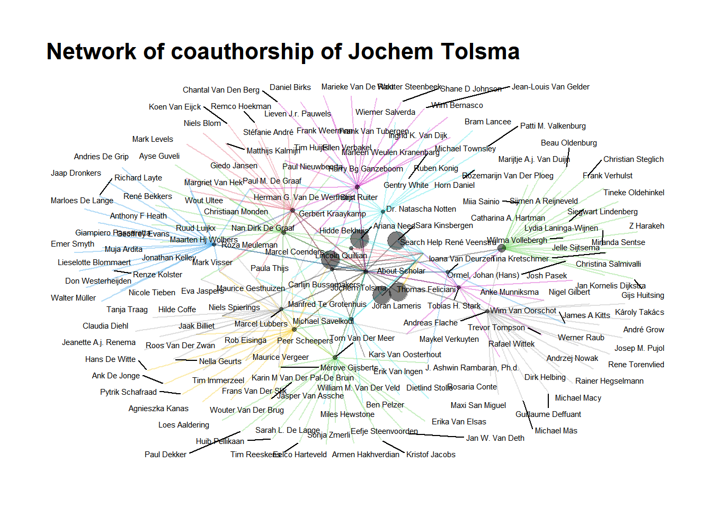

Chapter 11 Webscraping for Social Scientists
11.1 Chapter overview
“[The] technological revolution in mobile, Web, and Internet communications has the potential to revolutionize our understanding of ourselves and how we interact. Merton was right: Social science has still not found its Kepler. But three hundred years after Alexander Pope argued that the proper study of mankind should lie not in the heavens but in ourselves, we have finally found our telescope. Let the revolution begin…” (Watts 2011: 266)
Watts’ already-famous quote predicts a revolution in the social sciences. He and others (see also Lazer et al. 2009) essentially argue that social science will be revolutionized by the unprecedented use of of the social internet. Given that people overwhelmingly adopted internet technologies and given that many of the platforms that offer these technologies automatically archive all kinds of behavior (Spiro 2016) such as clicks, messages, social media relationships, and so forth, there may be a treasure trove of data on the internet that social scientists can use for their research on social processes. In this chapter, we discuss some of the promises and pitfalls of webscraping so-called “digital trace” data (Golder and Macy 2014) on the internet for social network analysis. We are then going to discuss some different techniques that are often used for webscraping. Note that the fast-pace nature of the internet inherently means that by the time you read this text, some of the things we discuss will be outdated. (Which can be argued to be one of the pitfalls of social science research with webscraping!) We are also getting our hands dirty with a hands-on example of digital trace data that we are going to collect ourselves. So by the end of this chapter, you will be familiar with some of the unique opportunities and difficulties of webscraped (social network) data, have a birds-eye perspective on the different techniques for scraping the web for your own research, have knowledge on the ethics surrounding webscraping, and have more in-depth experience on one specific package for webscraping bibliometric data in R. In short, you will have firsthand knowledge on the current state-of-the-art in sociological data collection. There are really good, exhaustive resources for webscraping and computational sociology. See, for instance, the book by Robert Ackland (Ackland 2013). Yet, to get up to speed for this chapter, you can read the first chapter of Bas Hofstra’s dissertation (Hofstra 2017), Golder and Macy’s Annual Review of Sociology article (Golder and Macy 2014), and Lazer and colleagues’ Science article (Lazer et al. 2009). A very nice introduction to the field of computational social science can be found in Salganik’s text book (Salganik 2019). An overview with recent applications is written by Edelman and colleagues (Edelmann et al. 2020).
11.1.1 Definitions
- Webscraping
The process by which you collect data from the internet. This can entail different routes: manual data collection, automated data collection via code, use of application programming interfaces, and so forth.
- Digital footprints
Automatically logged behavioral signals that actors – broadly construed: individuals, companies, organizations, groups, etc. – leave on the internet. This may imply many things, including the messages one leaves on Instagram posts, back-and-forth conversations on Whatsapp, companies’ job advertisements, university course texts, and so forth. All of these signals can capture some social process: networking on social media, signalling specific job requirements, or university course prerequisites. This also means that digital footprints can contain a lot of different and sometimes unstructured data types. Social network data is obvious: who is friends with whom on Facebook, who Tweets to whom, and so forth. Network data (not social) is also obvious. For instance, which website links to what other websites. (Sidenote: Google’s page-rank algorithm made them succesful, and this page-rank algorithm is based on network centrality that essentially filters out “influential” websites quickly. In other words, Google became such an influential company because of network analyses.) It can also contain (unstructured) text data, which in itself signals a lot of interesting social processes that one may consider.
- Computational sociology
Problem-driven, empirical sociology, but with the empirical part specifically containing some form of digital footprint data and/or some new methodological technique. Sociologists are usually (necessarily?) interested in digital footprints concerning some social process. Because digital footprints are often related to social network processes (e.g., befriending on Facebook, messaging on Twitter, etc.), a lot of computational sociology includes some form of social network analysis. Because this is often, though not always, the case, discussing webscraping in the context of this book on social network analyses makes perfect sense. Some claim Agent-Based Modelling to be part of computational sociology too, others not. Again others claim performing RSiena analyses is part of computational sociology, others not. Note that this definition-issue is somewhat of a useless moving target. Computational sociology’s definition will be different next week depending on who you ask. In this book, we use a pragmatic definition. This means that you are a computational sociologists if you use digital footprint data and/or use relatively new methodological techniques in your research. Also note that there is a certain cause-effect sequence in the three definions above: using webscraping techniques to gather digital footprint data to study social problems makes you a computational sociologist.
11.2 Promises and pitfalls
Like every data source in the social sciences and beyond, there are unique features as well as difficult challenges to webscraped data. In this subsection, we will discuss some of these advantages and challenges of webscraping and, by extension, digital footprint data. Like we discussed before, most of the research using webscraped digital footprint data concerns social networks and so we situate these promises and pitfalls in the context of social network analysis. Note, however, that some of the promises and pitfalls generalize to other types of digital footprint data too.
11.2.1 Promises
Dynamics
A second advantage of digital trace data is that these data are often time-stamped (and sometimes geo-stamped). This means that the the researcher knows exactly when (and where) the digital trace – e.g., the social interaction on Twitter – occurred. So the researcher can potentially perform some sort of longitudinal analyses so as to come closer to causal estimates in inferential statistical models. In the context of webscraped social networks this is particularly useful so as to separate selection from influence in larger social networks. Gathering such longitudinal sociometric data for many social foci (e.g., school classes) is difficult (yet, definitely not impossible!), whereas collecting time-stamped social interactions on the internet may be somewhat easier. Note also that social network data collected in, for instance, school classes often puts the same time-stamp on a given network (e.g., the time that class was surveyed), whereas networks online may contain more-detailed time-stamps. These time-stamped (network) data can in some cases be considered relational events (Butts 2008).
Signals
A third advantage of webscraped data is that it can potentially capture behavioral and/or attitudinal signals that are otherwise hard to come by. Say you want to know about social network dynamics among drug traders. Those drug traders probably won’t indicate in a survey that they are engaged in such illicit activities. Scraping data from the so-called “dark web” may be one of the only ways to study networks among drug traders (see Norbutas 2018 who does just that) apart from stitching together police reports which are likely to be confidential. Furthermore, survey respondents may be a bit hesitant to write about their own attitudes that are perceived to be socially undesirable (like severe ethnic prejudice). In that case, one may collect digital trace data on Twitter, where you can observe and then operationalize ethnic prejudice happening in real time. Not all online behaviors and/or attitudes are accurate proxies for offline attitudes/behavior of interest and are very particular to online settings. Therefore, the researcher must be aware, theorize, and ideally empirically show where and how their online data proxies their behavior-of-interest offline.
Size
Finally, and we discuss why this is both a blessing and a curse (see below), webscraping can lead to data that can contain a lot of observations (into the many millions!) or variables. Note that this is in and of itself not an advantage. More data are not always better data if they are biased. Yet, the sheer size of webscraped data – under appropriate sampling! – may make it easier to observe relationships between the variables of interest when they are small in magnitude. Such small effects may in smaller samples be swamped by random variability (cf. Golder and Macy 2014: 132) This does not mean one can go look into their big dataset for random relationships between variables, these relationships should be problematized and theorized first (just like any other problem-driven, hypothesis-testing social science study).
11.2.2 Pitfalls
Sampling
Scientists using digital trace data should think carefully about their target population vis-a-vis their sampling frame and realized sample. This is something that is not unique to digital trace data. Yet, it is easy to be so impressed by the sheer data size in studies using digital trace data that questions about generalizability of results sometimes tend to get overshadowed. That is not to say that it doesn’t tell us anything informative, just that we do not necessarily know to what target population such results generalize. All types of selectivity can crawl into the data. For instance, if you want to study Facebook/Instagram/TikTok, you should be aware that such platforms tend to get disproportionately populated by certain demographics. If among 5 million Twitter users those in geographical region a display some behavior y more so than those in region b, it does not necessarily mean that regions a and b differ in y. It may be that Twitter is perceived to be a particularly good platform in a to display y, whereas in b people are indifferent to display y on Twitter or elsewhere. Selection into Twitter thus plays an important role in this example. This may happen for many digital trace data sources: biased selection into certain platforms, biased selection into privacy settings which can obscure what you can observe, biased selection into what people display online, and so forth. Ideally, you would have some anchor data set from which you know that it generalizes to a given target population and link that to some source of digital trace data. On the other end, one could attempt to study an entire population such that you are pretty certain that you can generalize your results to that population.
Size
Like we described above, data size is an advantage of digital trace data, yet simultaneously it is also a pitfall. Huge numbers of observations (again, into the many if not hundreds of millions) may be pretty difficult to manipulate and analyze. In some cases, the data become so large that it is necessary to move to computing clusters because your laptop’s memory cannot handle it anymore. Dependent on what type of data you analyze you thus might need to adjust your data workflow. Not many educational programs prepare students for storing, manipulating, and analyzing large data sets, and this requires slightly different programming/statistical skills than what we’re used to. It may be a solution to sample from these huge data sets, such that you, say, only analyze a random sample of 5%. Yet, sampling from social networks is especially hard because of the interdependent nature of networks; some of the inherently clustered structure of networks is lost when you only draw a subset of agents from the network.
Data structure
This point relates to the point above. Webscraped digital trace data is usually structured very differently compared to the “flat” data files social scientists are used to working with. Usually, we open a dataset with columns (variables) and rows (observations). Webscraped data is usually stored in nested structured such as XML or JSON or contains text data. Therefore, additional manipulation is needed before we arrive at the data formats that standard statistical packages can read/analyze. Sometimes the networks-of-interest are stored in text data, for instance if you’re interested in letter-writing relationships. Hence, if you want to manipulate and analyze these data at scale, some form of programming becomes nearly unavoidable. (Luckily, we provide hands-on tools and examples in this book!)
Unobserved variables
Finally, webscraped digital trace data often do not contain the detailed demographic information that surveys (often) do provide. And this information often contains the key (control) variables in social science analyses. Imagine you scraped all customer reviews on the Etsy website because you want study how women and men reviewers judge the products of women and men creators differently. That is an important research question because it may show how gender dynamics in reviewing may (re)produce inequality between women and men creators. Yet, how do we know which reviewers are women or men? These labels do not come with the scraped data and some additional manipulation is needed. You could, for instance, attempt to predict whether a reviewer is a women or men by their first name. This is because first names are signals that relate strongly to gender. Yet, not every reviewer provides their first name but only a rather uninformative screenname. Furthermore, naming habits also vary between countries and the data do not inform you from which countries these reviewers originate. And what about age? What about income? Hence, there could be many factors related to the outcome you intend to study that are not readily available in digital trace data. This again requires some creativity on the researchers side, for instance by matching survey data with digital trace data, enrich data with other data sources, and so forth.
11.3 Where does this lead us?
So if we sum up what we have learned thus far, what are the overarching benefits of webscraped digital trace data compared to more-traditional data sources? We can think of at least three of those: * (1) New tests of old social science hypotheses made possible by the availability of digital footprint data; * (2) Tests of newly derived social science hypotheses made possible by the availability of digital footprint data; * (3) Tests of new theories about “the internet” as social phenomenon by itself.
Note that these three points are not mutually exclusive: a newly derived social science hypothesis might just as well be about the internet as social phenomenon by itself. Yet, for analytic purposes it is convenient to list these three as separate. An interesting example related to point (1) is the question whether social networks are “small-worlds” – i.e., highly clustered yet having a short average path length. A popular adage derives from this feature of social networks: individuals are all separated by approximately six degrees. This was traditionally studied by considering letter chains. Now one could study this with the entire Facebook network, and so one could actually test this hypothesis at much larger and complete scale than before (see XXX). With respect to point (2): you could derive new hypotheses about the conversational nature of massive collaborative projects by scraping and then studying all Wikipedia edits (something that was hard to study before). More recently, a lot of studies emerged on the role of fake news and echo chambers with respect to individual attitudes and polarization, which relates to point (3): how the internet as social phenomenon by itself can influence behavior/attitudes. The strongest computational social science papers leverage the strengths of digital trace data but simultaneously account for (or at the very least acknowledge) some of its weaknesses as we list above.
11.4 Ethics
In webscraping digital footprins, one has to always consider ethics. In an ideal situation, a researcher has informed consent to study research subjects. In practice, however, the nature of webscraping digital footprints makes it very difficult to obtain such consent. Ethic review boards
11.5 Webscraping techniques
11.5.1 Manual
Army of research assistants looking up information, saving that
11.5.2 APIs
Utilizing structures in place
11.5.3 Crawling
Designing own crawlers
11.6 Hands-on webscraping
Now that we learned about computational social science, webscraped digital trace data, and some of its techniques, it is time to get our hands dirty ourselves. In what follows is a short tutorial on webscraping where we will be collecting data from webpages on the internet. We will use the specific use-case of sociology staff at Radboud University. What do they publish? Where? And with whom do they collaborate? We assume you followed the R tutorial in this book, or that you otherwise have at least some experience with coding in R. In the rest of this tutorial, we will switch between base R and Tidyverse (just a bit), whatever is most convenient. (Note that this will happen sometimes if you become an applied computational sociologist.)
What are we are going to scrape specifically? This is a social network book so we’re obviously going to scrape social networks. Specifically, the social network of co-authors on the scientific papers of Radboud University’s Department of Sociology Staff. Co-authors on a paper are the set of scholars who publish a scientific paper together in a journal. Who do sociology staff publish with? And are those co-authors connected with one another too? Are these social networks clustered in some way? To get at such data we need several things: a list of RU’s sociology staff, a repository with their publication,s and the meta-information (titles, authors, etc.) of those publications. Substantively, this is key to look at things like how often scholars are cited or how social network dynamics in science work. (Not there is a whole body of research on the so-called “Sociology of Science” or the “Science of Science.” Because scientists are particularly good at documenting things, sociology/science of science type-of-work is some of the earliest work that you can label computational social science.)
In the remainder of this chapter, we thus provide a tutorial in which we explain the packages needed to do what we write above. We will shortly describe the scholar and other packages in R, the data sources, and the (network) data structures you encounter and how to deal with them. Yet, there are many ways code-wise or data-wise with which you use to do very similar things like we do in this tutorial.
11.6.1 Staging your script
- Open a new R-script (via file –> new –> RScript (or simply hit Ctrl+Shift+N or Cmd+Shift+N if you work on Mac)
- Before you start scraping and analyzing, take all the precautionary steps noted in A
So for this tutorial, your starting script will look something like this:
######################################### Title: Webscraping in R Author: Bas Hofstra Version:
######################################### 29-07-2021
# start with clean workspace
rm(list = ls())
library(tidyverse) # I assume you already installed this one!
install.packages("httr")
require(httr)
install.packages("xml2")
require(xml2)
install.packages("rvest")
require(rvest)
install.packages("devtools")
require(devtools)
# Note we're doing something different here. We're installing a *latest* version directly from
# GitHub This is because the released version of this packages contains some errors!
devtools::install_github("jkeirstead/scholar")
require(scholar)
# define workdirectory, note the double backslashes if you're on windows setwd('/yourpathhere)'11.6.2 Getting “anchor” data
A first step is to get the “anchor” data. The anchor data are the first data we scrape with which we then link to further data sources. Our goal is to get to know (i) who the Radboud University Department of Sociology staff is, (ii) what they publish with respect to scientific work, and (iii) who they collaborate with. So that means at least three data sources we need to collect from somewhere. What would be a nice starting (read: anchor) point be? First, we have to know who is on the sociology staff. Let’s check out the Radboud sociology website. There is lots of intriguing information, but not on who is who. There is, however, a specific link to the research staff. Here we do see a nice list on who is on the sociology staff! How do we get that data? It is actually quite simple, the package xml2 has a very nice function html_read() which simply extracts the source html of a webpage:
# Let's first get the staff page read_html is a function that simply extracts html webpages and
# puts them in xml format
soc_staff <- read_html("https://www.ru.nl/sociology/research/staff/")head(soc_staff)#> $node
#> <pointer: 0x0000000015ebef50>
#>
#> $doc
#> <pointer: 0x000000001482b690>That looks kinda weird. What type of object did we store it by putting the html into soc_staff?
class(soc_staff)#> [1] "xml_document" "xml_node"So it is is stored in something that R calls an XML object. Remember when we talked about that in the text above? Extensible Markup Language, XML, is a nested data structure where in each next sublayer of that structure new information is stored. Not important for now what that means specifically. But it is important to extract the relevant table that we saw on the sociology staff website. How do we do that? Go to the https://www.ru.nl/sociology/research/staff/ in Google Chrome and then press “Inspect” on the webpage (right click–>Inspect). You should see something like the screenshot below, right?

Figure 11.1: Inspect element
Look at the screenshot below, you should be able to see something like this. In the html code we extracted from the Radboud website, we need to go to one of the nodes first. If you move your cursor over “body” in the html code on the right-hand side of your screen, the entire “body” of the page should become some shade of blue. This means that the elements encapsulated in the “body” node captures everything that turned blue. This is essentially the nested data structure we mentioned above.

Figure 11.2: Website ‘body’ node
Next, we need to look at the specific elements on the page that we need to extract. Somewhat by informed trial and error, looking for the correct code, we can select the elements we want. In the screenshot below, you see that the “td” elements actually are the ones we need. So we need code that looks for the node “body” and the “td” elements in the xml object and then extract those elements in it. Note that you can click on the arrows once you are in the “Inspect” mode in the web browser to trial-and-error to get at the correct elements.

Figure 11.3: Element ‘td’ on website
Something like the code below should do just that:
# so we need to find WHERE the table is located in the html 'inspect element' in mozilla firefox or
# 'view page source' and you see that everything AFTER /td in the 'body' of the page seems to be
# the table we do need
soc_staff <- soc_staff %>%
rvest::html_nodes("body") %>%
xml2::xml_find_all("//td") %>%
rvest::html_text()Question: What happens in the code above? Why do we specify search for ‘body’ and ‘//td?’
Let us check out what happened to the soc_staff object now:
soc_staff # looks much better!!| x |
|---|
| Staff: |
| Expertise: |
| Batenburg, prof. dr. R. (Ronald) |
| Healthcare, labour market and healthcare professions and training |
| Begall, dr. K.H. (Katia) |
| Family, life course, labour market participation, division of household tasks and gender norms |
| Bekhuis, dr. H. (Hidde) |
| Welfare state, nationalism and sports |
| Berg, dr. L. van den (Lonneke) |
| Family, life course and transition to adulthood |
| Blommaert, dr. L. (Lieselotte) |
| Discrimination and inequality on the labour market |
| Damman, dr. M. (Marleen) |
| Labour market, life course, older workers, retirement and solo self-employed |
| Eisinga, prof. dr. R.N. (Rob) |
| Methods of research and statistics |
| Gesthuizen, dr. M.J.W. (Maurice) |
| Poverty en social cohesion |
| Glas, dr. S. (Saskia) |
| Islam, gender attitudes and sexuality |
| Hek, dr. M. van (Margriet) |
| Educational inequality, gender inequality, organizational sociology and culture |
| Hoekman, dr. R. H. A.(Remco) |
| Sports and policy sociology |
| Hofstra, dr. B. (Bas) |
| Diversity, inequality and innovation |
| Kraaykamp, prof. dr. G.L.M. (Gerbert) |
| Educational inequality, culture and health |
| Meuleman, dr. (Roza) |
| Culture and nationalism |
| Savelkoul, dr. M.J. (Michael) |
| Ethnic diversity, prejudice and social cohesion |
| Scheepers, prof. dr. P.L.H. (Peer) |
| Comparative research, social cohesion and diversity |
| Spierings, dr. C.H.B.M. (Niels) |
| Islam, gender, populism, social media, Middle East and migration |
| Tolsma, dr. J. (Jochem) |
| Inequality, criminology and ethnic diversity |
| Verbakel, prof. dr. C.M.C. (Ellen) Head of the department |
| Health, family and work |
| Visser, dr. M. (Mark) |
| Older workers, radicalism and social cohesion |
| Wolbers, prof. dr. M.H.J. (Maarten) |
| Educational inequality and labour market inequality |
| PhD: |
| Expertise: |
| Bussemakers, C. (Carlijn) MSc |
| Adverse youth experiences and social inequality |
| Franken, R. (Rob) MSc |
| Sport networks and motivation for sustainable sports participation |
| Firat, M. (Mustafa) MSc |
| Social inequality, older workers, life course and retirement |
| Geurts, P.G. (Nella) MSc |
| Integration and migration |
| Hendriks, I.P. (Inge) MSc |
| Resistance to refugees and social cohesion |
| Jeroense, T.M.G. (Thijmen) MSc |
| Political participation, segregation, opinion polarization and voting behaviour |
| Linders, N. (Nik) MSc |
| Populism, gender, masculinity and sexuality |
| Loh, S.M. (Renae) MSc |
| Educational sociology, social stratification, gender inequality and information communication technology (ICT) |
| Meijeren, M. (Maikel) MSc |
| Social capital, volunteer work and diversity |
| Mensvoort, C.A. van (Carly) MSc |
| Gender, leadership and social norms |
| Müller, K. (Katrin) MSc |
| Opinions about discrimination, migration and inequality |
| Raiber, K. (Klara) MSc |
| Informal care, employment, social inequality and gender |
| Ramaekers, M.J.M. (Marlou) MSc |
| Prosocial behaviour and family |
| Wiertsema, S. (Sara) MSc |
| Inequality in sports and physical activity, school-to-work transition and employment |
| External PhD: |
| Expertise: |
| Betkó, drs. J.G. (János) |
| Social assistance benefit, poverty, reintegration, RCT and social experiment |
| Houten, J. (Jasper) van MSc |
| Sports |
| Middendorp J. (Jansje) van MSc |
| Home administration |
| Vis, E. (Elize) MSc |
| Healthcare, labour market, healthcare professions and training, health and social capital |
| Weber, T. (Tijmen) MSc |
| International student mobility and the internationalization of higher education |
| Guest researchers: |
| Expertise: |
| Sterkens, dr. C.J.A. (Carl) |
| Religious conflicts, cohesion, religion and the philosophy of life |
| Vermeer, dr. P.A.D.M. (Paul) |
| Socialization processes, secularisation, religion and the philosophy of life |
So it looks much nicer but does not seem to be in the entirely correct order. We have odd rows and even rows: odd rows are names, even rows have the expertise of staff. We need to get a bit creative to put the data in a nicer format. The %% operator gives a “remainder” of integers (whole numbers). So 10/2=5 with no remainder, but 11/2=5 with a remainder of 1. This means that we can derive odd or even with a function with that operator. Remember functions from A?
fodd <- function(x) x%%2 != 0
feven <- function(x) x%%2 == 0Question: Do you understand what this function does?
How long are the data?
nstaf <- length(soc_staff)
nstaf#> [1] 92Alright, can we get the odd rows out of there?
# Do you understand why we need the nstaf? What it does?
soc_names <- soc_staff[fodd(1:nstaf)] # in the 1 until 94st number, get the odd elements
head(soc_names)#> [1] "Staff:" "Batenburg, prof. dr. R. (Ronald)"
#> [3] "Begall, dr. K.H. (Katia)" "Bekhuis, dr. H. (Hidde)"
#> [5] "Berg, dr. L. van den (Lonneke)" "Blommaert, dr. L. (Lieselotte)"And how about people’s expertise?
soc_experts <- soc_staff[feven(1:nstaf)] # in the 1 until 94st number, get the even elements
head(soc_experts)#> [1] "Expertise:"
#> [2] "Healthcare, labour market and healthcare professions and training"
#> [3] "Family, life course, labour market participation, division of household tasks and gender norms"
#> [4] "Welfare state, nationalism and sports"
#> [5] "Family, life course and transition to adulthood"
#> [6] "Discrimination and inequality on the labour market"Finally, can we merge those two vectors?
soc_df <- data.frame(cbind(soc_names, soc_experts)) # columnbind those and we have a DF for soc staff!How does that look?
soc_df # pretty nice!| soc_names | soc_experts |
|---|---|
| Staff: | Expertise: |
| Batenburg, prof. dr. R. (Ronald) | Healthcare, labour market and healthcare professions and training |
| Begall, dr. K.H. (Katia) | Family, life course, labour market participation, division of household tasks and gender norms |
| Bekhuis, dr. H. (Hidde) | Welfare state, nationalism and sports |
| Berg, dr. L. van den (Lonneke) | Family, life course and transition to adulthood |
| Blommaert, dr. L. (Lieselotte) | Discrimination and inequality on the labour market |
| Damman, dr. M. (Marleen) | Labour market, life course, older workers, retirement and solo self-employed |
| Eisinga, prof. dr. R.N. (Rob) | Methods of research and statistics |
| Gesthuizen, dr. M.J.W. (Maurice) | Poverty en social cohesion |
| Glas, dr. S. (Saskia) | Islam, gender attitudes and sexuality |
| Hek, dr. M. van (Margriet) | Educational inequality, gender inequality, organizational sociology and culture |
| Hoekman, dr. R. H. A.(Remco) | Sports and policy sociology |
| Hofstra, dr. B. (Bas) | Diversity, inequality and innovation |
| Kraaykamp, prof. dr. G.L.M. (Gerbert) | Educational inequality, culture and health |
| Meuleman, dr. (Roza) | Culture and nationalism |
| Savelkoul, dr. M.J. (Michael) | Ethnic diversity, prejudice and social cohesion |
| Scheepers, prof. dr. P.L.H. (Peer) | Comparative research, social cohesion and diversity |
| Spierings, dr. C.H.B.M. (Niels) | Islam, gender, populism, social media, Middle East and migration |
| Tolsma, dr. J. (Jochem) | Inequality, criminology and ethnic diversity |
| Verbakel, prof. dr. C.M.C. (Ellen) Head of the department | Health, family and work |
| Visser, dr. M. (Mark) | Older workers, radicalism and social cohesion |
| Wolbers, prof. dr. M.H.J. (Maarten) | Educational inequality and labour market inequality |
| PhD: | Expertise: |
| Bussemakers, C. (Carlijn) MSc | Adverse youth experiences and social inequality |
| Franken, R. (Rob) MSc | Sport networks and motivation for sustainable sports participation |
| Firat, M. (Mustafa) MSc | Social inequality, older workers, life course and retirement |
| Geurts, P.G. (Nella) MSc | Integration and migration |
| Hendriks, I.P. (Inge) MSc | Resistance to refugees and social cohesion |
| Jeroense, T.M.G. (Thijmen) MSc | Political participation, segregation, opinion polarization and voting behaviour |
| Linders, N. (Nik) MSc | Populism, gender, masculinity and sexuality |
| Loh, S.M. (Renae) MSc | Educational sociology, social stratification, gender inequality and information communication technology (ICT) |
| Meijeren, M. (Maikel) MSc | Social capital, volunteer work and diversity |
| Mensvoort, C.A. van (Carly) MSc | Gender, leadership and social norms |
| Müller, K. (Katrin) MSc | Opinions about discrimination, migration and inequality |
| Raiber, K. (Klara) MSc | Informal care, employment, social inequality and gender |
| Ramaekers, M.J.M. (Marlou) MSc | Prosocial behaviour and family |
| Wiertsema, S. (Sara) MSc | Inequality in sports and physical activity, school-to-work transition and employment |
| External PhD: | Expertise: |
| Betkó, drs. J.G. (János) | Social assistance benefit, poverty, reintegration, RCT and social experiment |
| Houten, J. (Jasper) van MSc | Sports |
| Middendorp J. (Jansje) van MSc | Home administration |
| Vis, E. (Elize) MSc | Healthcare, labour market, healthcare professions and training, health and social capital |
| Weber, T. (Tijmen) MSc | International student mobility and the internationalization of higher education |
| Guest researchers: | Expertise: |
| Sterkens, dr. C.J.A. (Carl) | Religious conflicts, cohesion, religion and the philosophy of life |
| Vermeer, dr. P.A.D.M. (Paul) | Socialization processes, secularisation, religion and the philosophy of life |
That looks much better! Now we only need to remove the redundant rows that state “expertise,” “staff,” and so forth.
# inspect again, and remove the rows we don't need (check for yourself to be certain!)
delrows <- which(soc_df$soc_names == "Staff:" | soc_df$soc_names == "PhD:" | soc_df$soc_names == "External PhD:" |
soc_df$soc_names == "Guest researchers:" | soc_df$soc_names == "Other researchers:")
soc_df <- soc_df[-delrows, ]Let’s check it out
soc_df # even better| soc_names | soc_experts | |
|---|---|---|
| 2 | Batenburg, prof. dr. R. (Ronald) | Healthcare, labour market and healthcare professions and training |
| 3 | Begall, dr. K.H. (Katia) | Family, life course, labour market participation, division of household tasks and gender norms |
| 4 | Bekhuis, dr. H. (Hidde) | Welfare state, nationalism and sports |
| 5 | Berg, dr. L. van den (Lonneke) | Family, life course and transition to adulthood |
| 6 | Blommaert, dr. L. (Lieselotte) | Discrimination and inequality on the labour market |
| 7 | Damman, dr. M. (Marleen) | Labour market, life course, older workers, retirement and solo self-employed |
| 8 | Eisinga, prof. dr. R.N. (Rob) | Methods of research and statistics |
| 9 | Gesthuizen, dr. M.J.W. (Maurice) | Poverty en social cohesion |
| 10 | Glas, dr. S. (Saskia) | Islam, gender attitudes and sexuality |
| 11 | Hek, dr. M. van (Margriet) | Educational inequality, gender inequality, organizational sociology and culture |
| 12 | Hoekman, dr. R. H. A.(Remco) | Sports and policy sociology |
| 13 | Hofstra, dr. B. (Bas) | Diversity, inequality and innovation |
| 14 | Kraaykamp, prof. dr. G.L.M. (Gerbert) | Educational inequality, culture and health |
| 15 | Meuleman, dr. (Roza) | Culture and nationalism |
| 16 | Savelkoul, dr. M.J. (Michael) | Ethnic diversity, prejudice and social cohesion |
| 17 | Scheepers, prof. dr. P.L.H. (Peer) | Comparative research, social cohesion and diversity |
| 18 | Spierings, dr. C.H.B.M. (Niels) | Islam, gender, populism, social media, Middle East and migration |
| 19 | Tolsma, dr. J. (Jochem) | Inequality, criminology and ethnic diversity |
| 20 | Verbakel, prof. dr. C.M.C. (Ellen) Head of the department | Health, family and work |
| 21 | Visser, dr. M. (Mark) | Older workers, radicalism and social cohesion |
| 22 | Wolbers, prof. dr. M.H.J. (Maarten) | Educational inequality and labour market inequality |
| 24 | Bussemakers, C. (Carlijn) MSc | Adverse youth experiences and social inequality |
| 25 | Franken, R. (Rob) MSc | Sport networks and motivation for sustainable sports participation |
| 26 | Firat, M. (Mustafa) MSc | Social inequality, older workers, life course and retirement |
| 27 | Geurts, P.G. (Nella) MSc | Integration and migration |
| 28 | Hendriks, I.P. (Inge) MSc | Resistance to refugees and social cohesion |
| 29 | Jeroense, T.M.G. (Thijmen) MSc | Political participation, segregation, opinion polarization and voting behaviour |
| 30 | Linders, N. (Nik) MSc | Populism, gender, masculinity and sexuality |
| 31 | Loh, S.M. (Renae) MSc | Educational sociology, social stratification, gender inequality and information communication technology (ICT) |
| 32 | Meijeren, M. (Maikel) MSc | Social capital, volunteer work and diversity |
| 33 | Mensvoort, C.A. van (Carly) MSc | Gender, leadership and social norms |
| 34 | Müller, K. (Katrin) MSc | Opinions about discrimination, migration and inequality |
| 35 | Raiber, K. (Klara) MSc | Informal care, employment, social inequality and gender |
| 36 | Ramaekers, M.J.M. (Marlou) MSc | Prosocial behaviour and family |
| 37 | Wiertsema, S. (Sara) MSc | Inequality in sports and physical activity, school-to-work transition and employment |
| 39 | Betkó, drs. J.G. (János) | Social assistance benefit, poverty, reintegration, RCT and social experiment |
| 40 | Houten, J. (Jasper) van MSc | Sports |
| 41 | Middendorp J. (Jansje) van MSc | Home administration |
| 42 | Vis, E. (Elize) MSc | Healthcare, labour market, healthcare professions and training, health and social capital |
| 43 | Weber, T. (Tijmen) MSc | International student mobility and the internationalization of higher education |
| 45 | Sterkens, dr. C.J.A. (Carl) | Religious conflicts, cohesion, religion and the philosophy of life |
| 46 | Vermeer, dr. P.A.D.M. (Paul) | Socialization processes, secularisation, religion and the philosophy of life |
Now we have a nice relatively clean dataset with all sociology staff and their expterise. But there is yet some work to do before we can move on. We need to do some data cleaning. Ideally, we have staff their first and last names in clean columns. So the last name seems easy, everything before the comma. Do you understand the code below? gsub is a function that remove something and replaces it with something else. In the code below it replaces everything that’s behind a comma with nothing in the column soc_names in the data frame soc_df.
The first name is trickier, we need some more difficult expressions to extract first names from this string. It’s not necessary for now to exactly know how the expressions below work, but if you want to get into it, here’s a nice resource. The important part of the code below is that it extracts everything that’s in between the brackets.
# Last name seems to be everything before the comma
soc_df$last_name <- gsub(",.*$", "", soc_df$soc_names)
# first name is everything between brackets
soc_df$first_name <- str_extract_all(soc_df$soc_names, "(?<=\\().+?(?=\\))", simplify = TRUE)| soc_names | soc_experts | last_name | first_name | |
|---|---|---|---|---|
| 2 | Batenburg, prof. dr. R. (Ronald) | Healthcare, labour market and healthcare professions and training | Batenburg | Ronald |
| 3 | Begall, dr. K.H. (Katia) | Family, life course, labour market participation, division of household tasks and gender norms | Begall | Katia |
| 4 | Bekhuis, dr. H. (Hidde) | Welfare state, nationalism and sports | Bekhuis | Hidde |
| 5 | Berg, dr. L. van den (Lonneke) | Family, life course and transition to adulthood | Berg | Lonneke |
| 6 | Blommaert, dr. L. (Lieselotte) | Discrimination and inequality on the labour market | Blommaert | Lieselotte |
| 7 | Damman, dr. M. (Marleen) | Labour market, life course, older workers, retirement and solo self-employed | Damman | Marleen |
| 8 | Eisinga, prof. dr. R.N. (Rob) | Methods of research and statistics | Eisinga | Rob |
| 9 | Gesthuizen, dr. M.J.W. (Maurice) | Poverty en social cohesion | Gesthuizen | Maurice |
| 10 | Glas, dr. S. (Saskia) | Islam, gender attitudes and sexuality | Glas | Saskia |
| 11 | Hek, dr. M. van (Margriet) | Educational inequality, gender inequality, organizational sociology and culture | Hek | Margriet |
| 12 | Hoekman, dr. R. H. A.(Remco) | Sports and policy sociology | Hoekman | Remco |
| 13 | Hofstra, dr. B. (Bas) | Diversity, inequality and innovation | Hofstra | Bas |
| 14 | Kraaykamp, prof. dr. G.L.M. (Gerbert) | Educational inequality, culture and health | Kraaykamp | Gerbert |
| 15 | Meuleman, dr. (Roza) | Culture and nationalism | Meuleman | Roza |
| 16 | Savelkoul, dr. M.J. (Michael) | Ethnic diversity, prejudice and social cohesion | Savelkoul | Michael |
| 17 | Scheepers, prof. dr. P.L.H. (Peer) | Comparative research, social cohesion and diversity | Scheepers | Peer |
| 18 | Spierings, dr. C.H.B.M. (Niels) | Islam, gender, populism, social media, Middle East and migration | Spierings | Niels |
| 19 | Tolsma, dr. J. (Jochem) | Inequality, criminology and ethnic diversity | Tolsma | Jochem |
| 20 | Verbakel, prof. dr. C.M.C. (Ellen) Head of the department | Health, family and work | Verbakel | Ellen |
| 21 | Visser, dr. M. (Mark) | Older workers, radicalism and social cohesion | Visser | Mark |
| 22 | Wolbers, prof. dr. M.H.J. (Maarten) | Educational inequality and labour market inequality | Wolbers | Maarten |
| 24 | Bussemakers, C. (Carlijn) MSc | Adverse youth experiences and social inequality | Bussemakers | Carlijn |
| 25 | Franken, R. (Rob) MSc | Sport networks and motivation for sustainable sports participation | Franken | Rob |
| 26 | Firat, M. (Mustafa) MSc | Social inequality, older workers, life course and retirement | Firat | Mustafa |
| 27 | Geurts, P.G. (Nella) MSc | Integration and migration | Geurts | Nella |
| 28 | Hendriks, I.P. (Inge) MSc | Resistance to refugees and social cohesion | Hendriks | Inge |
| 29 | Jeroense, T.M.G. (Thijmen) MSc | Political participation, segregation, opinion polarization and voting behaviour | Jeroense | Thijmen |
| 30 | Linders, N. (Nik) MSc | Populism, gender, masculinity and sexuality | Linders | Nik |
| 31 | Loh, S.M. (Renae) MSc | Educational sociology, social stratification, gender inequality and information communication technology (ICT) | Loh | Renae |
| 32 | Meijeren, M. (Maikel) MSc | Social capital, volunteer work and diversity | Meijeren | Maikel |
| 33 | Mensvoort, C.A. van (Carly) MSc | Gender, leadership and social norms | Mensvoort | Carly |
| 34 | Müller, K. (Katrin) MSc | Opinions about discrimination, migration and inequality | Müller | Katrin |
| 35 | Raiber, K. (Klara) MSc | Informal care, employment, social inequality and gender | Raiber | Klara |
| 36 | Ramaekers, M.J.M. (Marlou) MSc | Prosocial behaviour and family | Ramaekers | Marlou |
| 37 | Wiertsema, S. (Sara) MSc | Inequality in sports and physical activity, school-to-work transition and employment | Wiertsema | Sara |
| 39 | Betkó, drs. J.G. (János) | Social assistance benefit, poverty, reintegration, RCT and social experiment | Betkó | János |
| 40 | Houten, J. (Jasper) van MSc | Sports | Houten | Jasper |
| 41 | Middendorp J. (Jansje) van MSc | Home administration | Middendorp J. (Jansje) van MSc | Jansje |
| 42 | Vis, E. (Elize) MSc | Healthcare, labour market, healthcare professions and training, health and social capital | Vis | Elize |
| 43 | Weber, T. (Tijmen) MSc | International student mobility and the internationalization of higher education | Weber | Tijmen |
| 45 | Sterkens, dr. C.J.A. (Carl) | Religious conflicts, cohesion, religion and the philosophy of life | Sterkens | Carl |
| 46 | Vermeer, dr. P.A.D.M. (Paul) | Socialization processes, secularisation, religion and the philosophy of life | Vermeer | Paul |
So we need yet to do some manual cleaning, one name seemed to be inconsistent with how the other names were listed on the webpage. As data get bigger, this becomes impossible to do manually and we simply have to accept this as noise.
soc_df$last_name <- gsub(" J. \\(Jansje\\) van MSc", "", soc_df$last_name)
soc_df$first_name <- tolower(soc_df$first_name) # everything to lower!
soc_df$last_name <- tolower(soc_df$last_name)Not quite there yet. To be sure, we’ll trim some white space in the variables we know created. This means we remove spaces before and after strings. Usually, with a much larger dataset which you cannot immediately observe, you can further clean the data by removing weird characters.
# trimws looses all spacing before and after (if you specify 'both') a character string
soc_df$last_name <- trimws(soc_df$last_name, which = c("both"), whitespace = "[ \t\r\n]")
soc_df$first_name <- trimws(soc_df$first_name, which = c("both"), whitespace = "[ \t\r\n]")
soc_df$soc_experts <- trimws(soc_df$soc_experts, which = c("both"), whitespace = "[ \t\r\n]")
soc_df$soc_names <- trimws(soc_df$soc_names, which = c("both"), whitespace = "[ \t\r\n]")Finally, because we’re quite sure that all these staff are in some way affiliated with Radboud University (why would they otherwise be on the Radboud website?), we simply create a variable that contains a character string “radboud university” for all.
# set affiliation to radboud, comes in handy for querying google scholar
soc_df$affiliation <- "radboud university"How do the data look?
soc_df| soc_names | soc_experts | last_name | first_name | affiliation | |
|---|---|---|---|---|---|
| 2 | Batenburg, prof. dr. R. (Ronald) | Healthcare, labour market and healthcare professions and training | batenburg | ronald | radboud university |
| 3 | Begall, dr. K.H. (Katia) | Family, life course, labour market participation, division of household tasks and gender norms | begall | katia | radboud university |
| 4 | Bekhuis, dr. H. (Hidde) | Welfare state, nationalism and sports | bekhuis | hidde | radboud university |
| 5 | Berg, dr. L. van den (Lonneke) | Family, life course and transition to adulthood | berg | lonneke | radboud university |
| 6 | Blommaert, dr. L. (Lieselotte) | Discrimination and inequality on the labour market | blommaert | lieselotte | radboud university |
| 7 | Damman, dr. M. (Marleen) | Labour market, life course, older workers, retirement and solo self-employed | damman | marleen | radboud university |
| 8 | Eisinga, prof. dr. R.N. (Rob) | Methods of research and statistics | eisinga | rob | radboud university |
| 9 | Gesthuizen, dr. M.J.W. (Maurice) | Poverty en social cohesion | gesthuizen | maurice | radboud university |
| 10 | Glas, dr. S. (Saskia) | Islam, gender attitudes and sexuality | glas | saskia | radboud university |
| 11 | Hek, dr. M. van (Margriet) | Educational inequality, gender inequality, organizational sociology and culture | hek | margriet | radboud university |
| 12 | Hoekman, dr. R. H. A.(Remco) | Sports and policy sociology | hoekman | remco | radboud university |
| 13 | Hofstra, dr. B. (Bas) | Diversity, inequality and innovation | hofstra | bas | radboud university |
| 14 | Kraaykamp, prof. dr. G.L.M. (Gerbert) | Educational inequality, culture and health | kraaykamp | gerbert | radboud university |
| 15 | Meuleman, dr. (Roza) | Culture and nationalism | meuleman | roza | radboud university |
| 16 | Savelkoul, dr. M.J. (Michael) | Ethnic diversity, prejudice and social cohesion | savelkoul | michael | radboud university |
| 17 | Scheepers, prof. dr. P.L.H. (Peer) | Comparative research, social cohesion and diversity | scheepers | peer | radboud university |
| 18 | Spierings, dr. C.H.B.M. (Niels) | Islam, gender, populism, social media, Middle East and migration | spierings | niels | radboud university |
| 19 | Tolsma, dr. J. (Jochem) | Inequality, criminology and ethnic diversity | tolsma | jochem | radboud university |
| 20 | Verbakel, prof. dr. C.M.C. (Ellen) Head of the department | Health, family and work | verbakel | ellen | radboud university |
| 21 | Visser, dr. M. (Mark) | Older workers, radicalism and social cohesion | visser | mark | radboud university |
| 22 | Wolbers, prof. dr. M.H.J. (Maarten) | Educational inequality and labour market inequality | wolbers | maarten | radboud university |
| 24 | Bussemakers, C. (Carlijn) MSc | Adverse youth experiences and social inequality | bussemakers | carlijn | radboud university |
| 25 | Franken, R. (Rob) MSc | Sport networks and motivation for sustainable sports participation | franken | rob | radboud university |
| 26 | Firat, M. (Mustafa) MSc | Social inequality, older workers, life course and retirement | firat | mustafa | radboud university |
| 27 | Geurts, P.G. (Nella) MSc | Integration and migration | geurts | nella | radboud university |
| 28 | Hendriks, I.P. (Inge) MSc | Resistance to refugees and social cohesion | hendriks | inge | radboud university |
| 29 | Jeroense, T.M.G. (Thijmen) MSc | Political participation, segregation, opinion polarization and voting behaviour | jeroense | thijmen | radboud university |
| 30 | Linders, N. (Nik) MSc | Populism, gender, masculinity and sexuality | linders | nik | radboud university |
| 31 | Loh, S.M. (Renae) MSc | Educational sociology, social stratification, gender inequality and information communication technology (ICT) | loh | renae | radboud university |
| 32 | Meijeren, M. (Maikel) MSc | Social capital, volunteer work and diversity | meijeren | maikel | radboud university |
| 33 | Mensvoort, C.A. van (Carly) MSc | Gender, leadership and social norms | mensvoort | carly | radboud university |
| 34 | Müller, K. (Katrin) MSc | Opinions about discrimination, migration and inequality | müller | katrin | radboud university |
| 35 | Raiber, K. (Klara) MSc | Informal care, employment, social inequality and gender | raiber | klara | radboud university |
| 36 | Ramaekers, M.J.M. (Marlou) MSc | Prosocial behaviour and family | ramaekers | marlou | radboud university |
| 37 | Wiertsema, S. (Sara) MSc | Inequality in sports and physical activity, school-to-work transition and employment | wiertsema | sara | radboud university |
| 39 | Betkó, drs. J.G. (János) | Social assistance benefit, poverty, reintegration, RCT and social experiment | betkó | jános | radboud university |
| 40 | Houten, J. (Jasper) van MSc | Sports | houten | jasper | radboud university |
| 41 | Middendorp J. (Jansje) van MSc | Home administration | middendorp | jansje | radboud university |
| 42 | Vis, E. (Elize) MSc | Healthcare, labour market, healthcare professions and training, health and social capital | vis | elize | radboud university |
| 43 | Weber, T. (Tijmen) MSc | International student mobility and the internationalization of higher education | weber | tijmen | radboud university |
| 45 | Sterkens, dr. C.J.A. (Carl) | Religious conflicts, cohesion, religion and the philosophy of life | sterkens | carl | radboud university |
| 46 | Vermeer, dr. P.A.D.M. (Paul) | Socialization processes, secularisation, religion and the philosophy of life | vermeer | paul | radboud university |
Pretty good, so I think we can move on to the next section.
11.6.3 Google Scholar Profiles and Publications
What we now have is a data frame of sociology staff members. So we successfully gathered the anchor data set we can move on with. Next, we need to find out whether these staff have a Google Scholar profile. I imagine you have accessed Google Scholar many times during your studies for finding scientists or publications. The nice thing about Google Scholar is that it lists collaborators, publications, and citations on profiles. So what we first need to do is look for Google Scholar profiles among sociology staff. Luckily, we cleaned first and last names and have their affiliation. That makes looking them up much easier. So we need to do this for every person in our data frame. Before we query Google Scholar, we first need to go back to the neat trick of for loops (remember them from the A?). Can you follow the code below? We can thus do all kinds of things automatically in a for loop.
# The 'for loop': for every i in a vector (can be numbers, strings, etc.), say 1 to 10, you can do
# 'something'
for (i in 1:10) {
print(i) # So for every i from 1 to 10, we print i, see what happens!
}#> [1] 1
#> [1] 2
#> [1] 3
#> [1] 4
#> [1] 5
#> [1] 6
#> [1] 7
#> [1] 8
#> [1] 9
#> [1] 10# # or do something more complicated p <- rnorm(10, 0, 1) # draw 10 normally distributed numbers
# with mean 0 and SD 1 (so z-scores, essentially) plot(density(p)) # relatively, normal, right? u
# <- 0 # make an element we can fill up in the loop below for (i in 1:10) { u[i] <- p[i]*p[i] # get
# p-squared for every i-th element in vector p print(u[i]) # and print that squared element }Now that we know how to implement for loops in our workflow, we can utilize them to do slightly more complicated stuff. We want to know the identifying link on Google Scholar for each sociology staff member. We first set an empty identifier in our data frame so that we can “fill up” that data column later.
soc_df$gs_id <- "" # we set an empty identifierSo let’s move on with attempting to find Google Scholar profiles. The package scholar has a range of very nice functions! What type of functions does scholar have? Take a look by ?scholar or ??scholar. It includes all kinds of interesting functions like comparing scholars’ careers, getting scholar citations, getting profiles, and so forth. Using get_scholar_id seems appropriate to find out what the profile ID is of Jochem’s Google Scholar page. If you write get_scholar_id and then click ctrl or cmd together with your right mouse button, you can actually see precisely what the function does (it’s quite complicated!). Note that this package does not use an API, but simple wrote code to extract Google Scholar pages from the internet. They then wrapped the code in much simpler functions for you to use. The function get_scholar_id needs a last name, first name, and affiliation. Luckily, we already found those on the Radboud University website! So we can fill in those. Let’s try it for one staff member first.
source("addfiles/function_fix.R") # Put the function_fix.R in your working directory, we need this first line.
get_scholar_id_fix(last_name = "tolsma", first_name = "jochem", affiliation = "radboud university")#> [1] "Iu23-90AAAAJ"We now know that Jochem’s Scholar ID is “Iu23-90AAAAJ.” That’s very convenient, because now we can use the package scholar again to extract a range of useful other information from his Google Scholar profile. Let’s try it out on his profile first. Notice the nice function get_profiles. We simply have to input his Google Scholar ID and it shows everything on the profile.
get_profile("Iu23-90AAAAJ") # Jochem's profile#> $id
#> [1] "Iu23-90AAAAJ"
#>
#> $name
#> [1] "Jochem Tolsma"
#>
#> $affiliation
#> [1] "Professor, Radboud University Nijmegen / University of Groningen"
#>
#> $total_cites
#> [1] 2297
#>
#> $h_index
#> [1] 22
#>
#> $i10_index
#> [1] 33
#>
#> $fields
#> [1] "verified email at ru.nl - homepage"
#>
#> $homepage
#> [1] "http://www.jochemtolsma.nl/"
#>
#> $interests
#> [1] "social divisions between groups" "segregation"
#> [3] "inequality"
#>
#> $coauthors
#> [1] "Tom van der Meer" "Gerbert Kraaykamp" "Maarten HJ Wolbers" "peer scheepers"
#> [5] "Michael Savelkoul" "Stijn Ruiter" "Marcel Lubbers" "Maurice Gesthuizen"
#> [9] "Marcel Coenders" "Nan Dirk de Graaf" "Tobias H. Stark" "Sara Kinsbergen"
#> [13] "Christiaan Monden" "Matthijs Kalmijn" "Lincoln Quillian" "Thomas Feliciani"
#> [17] "Andreas Flache" "Marloes de Lange" "Ariana Need" "René Veenstra"A lot of useful information! Next up, Jochem’s publications. Notice how not everything is in a nice data frame format yet, we’ll get to that later.
get_publications("Iu23-90AAAAJ") # Jochem's pubs#> title
#> 1 Ethnic diversity and its effects on social cohesion
#> 2 Anti-Muslim attitudes in the Netherlands: Tests of contradictory hypotheses derived from ethnic competition theory and intergroup contact theory
#> 3 The impact of neighbourhood and municipality characteristics on social cohesion in the Netherlands
#> 4 The effects of parental reading socialization and early school involvement on children’s academic performance: A panel study of primary school pupils in the Netherlands
#> 5 Ethnic competition and opposition to ethnic intermarriage in the Netherlands: A multi-level approach
#> 6 Who is bullying whom in ethnically diverse primary schools? Exploring links between bullying, ethnicity, and ethnic diversity in Dutch primary schools
#> 7 When do people report crime to the police? Results from a factorial survey design in the Netherlands, 2010
#> 8 Education and cultural integration among ethnic minorities and natives in the Netherlands: A test of the integration paradox
#> 9 Trends in ethnic educational inequalities in the Netherlands: a cohort design
#> 10 Does intergenerational social mobility affect antagonistic attitudes towards ethnic minorities?
#> 11 Explaining participation differentials in Dutch higher education: the impact of subjective success probabilities on level choice and field choice
#> 12 The impact of adolescents' classroom and neighborhood ethnic diversity on same-and cross-ethnic friendships within classrooms
#> 13 Neighbourhood ethnic composition and voting for the radical right in The Netherlands. The role of perceived neighbourhood threat and interethnic neighbourhood contact
#> 14 Losing Wallets, Retaining Trust? The Relationship Between Ethnic Heterogeneity and Trusting Coethnic and Non-coethnic Neighbours and Non-neighbours to Return a Lost Wallet
#> 15 At which geographic scale does ethnic diversity affect intra-neighborhood social capital?
#> 16 Educational expansion and field of study: trends in the intergenerational transmission of educational inequality in the Netherlands
#> 17 The NEtherlands Longitudinal Lifecourse Study (NELLS, Panel): Codebook
#> 18 Bringing the beneficiary closer: Explanations for volunteering time in Dutch private development initiatives
#> 19 Onderwijs als nieuwe sociale scheidslijn? De gevolgen van onderwijsexpansie voor sociale mobiliteit, de waarde van diploma’s en het relatieve belang van opleiding in Nederland
#> 20 Naar een open samenleving?
#> 21 Explaining monetary donations to international development organisations: A factorial survey approach
#> 22 Social origin and occupational success at labour market entry in The Netherlands, 1931–80
#> 23 How, when and where can spatial segregation induce opinion polarization? Two competing models
#> 24 How friends’ involvement in crime affects the risk of offending and victimization
#> 25 Perceptions as the crucial link? The mediating role of neighborhood perceptions in the relationship between the neighborhood context and neighborhood cohesion
#> 26 VU Research Portal
#> 27 Ethnic hostility among ethnic majority and minority groups in the Netherlands: An investigation into the impact of social mobility experiences, the local living environment and …
#> 28 Explaining natives' interethnic friendship and contact with colleagues in European regions
#> 29 Netherlands Longitudinal Lifecourse Study-NELLS Panel Wave 1 2009 and Wave 2 2013-version 1.1
#> 30 Trust and contact in diverse neighbourhoods: An interplay of four ethnicity effects
#> 31 Combating hooliganism in the Netherlands: An evaluation of measures to combat hooliganism with longitudinal registration data
#> 32 De onderwijskansen van allochtone en autochtone Nederlanders vergeleken: Een cohort-design [Ethnic inequality of educational opportunities in the Netherlands: A cohort design]
#> 33 Size is in the eye of the beholder: How differences between neighbourhoods and individuals explain variation in estimations of the ethnic out-group size in the neighbourhood
#> 34 Like two peas in a pod? Explaining friendship selection processes related to victimization and offending
#> 35 Aangiftebereidheid: Welke overwegingen spelen een rol bij de beslissing om wel of niet aangifte te doen?
#> 36 Co-occurrence of adverse childhood experiences and its association with family characteristics. A latent class analysis with Dutch population data
#> 37 De aangifte van delicten bij de multichannelstrategie van de politie
#> 38 Parents, television and children's weight status: On lasting effects of parental television socialization in the Netherlands
#> 39 Taakstraffen langs de lat: strafopvattingen van Nederlanders
#> 40 Where does ethnic concentration matter for populist radical right support? An analysis of geographical scale and the halo effect
#> 41 Opleiding als sociale scheidslijn. Een nieuw perspectief op een oude kloof.
#> 42 Archeologische verwachtings-en beleidskaart buitengebied gemeente Midden-Drenthe
#> 43 Under what conditions do ethnic minority candidates attract the ethnic minority vote? How neighbourhood and candidate characteristics affected ethnic affinity voting in the …
#> 44 Vrijheid versus veiligheid: Wie steunt vrijheidsbeperking omwille van veiligheid in Nederland?
#> 45 Opleiding als sociale scheidslijn
#> 46 Dader, slachtoffer, of beiden?
#> 47 Education's impact on explanations of radical right-wing voting
#> 48 Social origin and inequality in educational returns in the Dutch labour market
#> 49 Opleiding als sociale scheidslijn: Een nieuw perspectief op een oude kloof
#> 50 De burger als rechter
#> 51 Exposure to asylum seekers and changing support for the radical right: A natural experiment in the Netherlands
#> 52 Ontwikkelingen in de maatschappelijke positie van middelbaar opgeleiden in Nederland
#> 53 Integratie en depressie: De relatie tussen sociaal-culturele integratie en depressieklachten bij Turkse en Marokkaanse Nederlanders
#> 54 Integratie en depressie-De relatie tussen sociaal-culturele integratie en depressieklachten bij Turkse en Marokkaanse Nederlander
#> 55 Integratie en depressie
#> 56 Household dysfunction and child development: Do financial resources matter?
#> 57 Preferences for work arrangements: A discrete choice experiment
#> 58 Fairly paid but dissatisfied? Determinants of pay fairness and pay satisfaction: Evidence from Germany and the Netherlands
#> 59 In hoeverre verklaart de etnische samenstelling van de buurt de kans om te stemmen op de PVV?
#> 60 Soort zoekt soort: vriendschapselectieprocessen met betrekking tot slachtofferschap en daderschap
#> 61 Joran Laméris Radboud University Nijmegen
#> 62 Modeling opinion dynamics in a real city: How realistic spatial patterns of demographic attributes affect the emergence of opinion polarization
#> 63 Summary of “How, When and Where Can Spatial Segregation Induce Opinion Polarization? Two Competing Models”: Paper Under Review as JASSS Fast Track Submission
#> 64 ICS Alumni revisited [Brochure tbv Lustrum ICS]
#> 65 ICS Alumni Survey 2016 [Databestand]
#> 66 Modeling opinion dynamics in a simulated city. Realistic spatial patterns of demographic attributes and the emergence of opinion polarization
#> 67 De invloed van grootouders op het opleidingsniveau van kleinkinderen
#> 68 Opleiding als sociale scheidslijn: Een tegengeluid
#> 69 Opleiding als sociale scheidslijn: aanleiding, probleemstelling, bestaande inzichten en werkwijze
#> 70 De samenhang in het opleidingsniveau tussen (huwelijks) partners
#> 71 Sociale herkomst en ongelijkheid in de opbrengsten van diploma's op de arbeidsmarkt
#> 72 De rol van het opleidingsniveau voor het starten en stoppen met vrijwilligerswerk
#> 73 Trends in de opleidingskloof op verschillende maatschappelijke domeinen
#> 74 Was, is of wordt opleiding de sociale scheidslijn? Een terugblik, stand van zaken en toekomstvisie
#> 75 DANS EASY
#> 76 Klein en vrijwillig of groot en ervaren? Een analyse van de voorkeuren van donateurs
#> 77 De burger als rechter, onderzoek naar geprefereerde sancties voor misdrijven in Nederland (projectnummer 1933B)
#> 78 Aangiftebereidheid: Welke overwegingen spelen een rol bij de beslissing om wel of niet aangifte te doen?|
#> 79 Onderwijsexpansie veroorzaakt nieuwe ongelijkheid
#> 80 Sociale daling schaadt vertrouwen: Effecten van sociale mobiliteit
#> 81 Toenemende gelijkheid is nog geen verheffing
#> 82 Over ouders, televisiekijken en (over) gewicht: Een studie naar de langetermijneffecten van ouderlijke televisiesocialisatie op het lichaamsgewicht van kinderen
#> 83 Onderwijsexpansie en opleidingsrichting: Trends in de intergenerationele overdracht van onderwijsongelijkheid
#> 84 Does Intergenerational Social Mobility affect Antagonistic Attitudes towards Ethnic Minorities
#> 85 De invloed van lands-, gemeente-en buurtkenmerken op sociaal kapitaal: Putnam's hypothese getest in Europa en Nederland
#> 86 Causes of dyads (theory)
#> 87 Egocentric Networks
#> 88 Onbeperkte mogelijkheden 122
#> 89 De invloed van lands-, gemeente-en buurtkenmerken op sociaal kapitaal Gesthuizen, M.; Scheepers, P.; Tolsma, J.; Meer, TWG van der
#> 90 The Role of Recent Migrants’ Country of Origin Engagement in Dutch Language Proficiency
#> 91 Notes on Contributors Female Education and Marriage Dissolution: Is it a Selection Effect? Fabrizio Bernardi and Juan-Ignacio Martinez-Pastor 693 Age, Inequality, and Reactions …
#> 92 Notes on Contributors The Effects of Parental Reading Socialization and Early School Involvement on Children’s Academic Performance: A Panel Study of Primary School Pupils in …
#> 93 M1-102: Social capital and networks
#> 94 Social origin and occupational success at labour market entry in the Netherlands
#> author
#> 1 T Van der Meer, J Tolsma
#> 2 M Savelkoul, P Scheepers, J Tolsma, L Hagendoorn
#> 3 J Tolsma, T van der Meer, M Gesthuizen
#> 4 R Kloosterman, N Notten, J Tolsma, G Kraaykamp
#> 5 J Tolsma, M Lubbers, M Coenders
#> 6 J Tolsma, I van Deurzen, TH Stark, R Veenstra
#> 7 J Tolsma, J Blaauw, M Te Grotenhuis
#> 8 J Tolsma, M Lubbers, M Gijsberts
#> 9 J Tolsma, M Coenders, M Lubbers
#> 10 J Tolsma, ND De Graaf, L Quillian
#> 11 J Tolsma, A Need, U De Jong
#> 12 A Munniksma, P Scheepers, TH Stark, J Tolsma
#> 13 M Savelkoul, J Laméris, J Tolsma
#> 14 J Tolsma, TWG van der Meer
#> 15 R Sluiter, J Tolsma, P Scheepers
#> 16 G Kraaykamp, J Tolsma, MHJ Wolbers
#> 17 J Tolsma, GLM Kraaykamp, PM de Graaf, M Kalmijn, CWS Monden
#> 18 S Kinsbergen, J Tolsma, S Ruiter
#> 19 J Tolsma, MHJ Wolbers
#> 20 J Tolsma, MHJ Wolbers
#> 21 S Kinsbergen, J Tolsma
#> 22 J Tolsma, MHJ Wolbers
#> 23 T Feliciani, A Flache, J Tolsma
#> 24 JJ Rokven, G de Boer, J Tolsma, S Ruiter
#> 25 J Laméris, JR Hipp, J Tolsma
#> 26 S Ruiter, J Tolsma, M De Hoon, H Elffers, P Van der Laan
#> 27 J Tolsma
#> 28 M Savelkoul, J Tolsma, P Scheepers
#> 29 J Tolsma, GLM Kraaykamp, PM De Graaf, M Kalmijn, CM Monden
#> 30 J Tolsma, TWG Van der Meer
#> 31 D Schaap, M Postma, L Jansen, J Tolsma
#> 32 J Tolsma, MTA Coenders, M Lubbers
#> 33 J Laméris, G Kraaykamp, S Ruiter, J Tolsma
#> 34 JJ Rokven, J Tolsma, S Ruiter, G Kraaykamp
#> 35 J Tolsma
#> 36 C Bussemakers, G Kraaykamp, J Tolsma
#> 37 PFM Boekhoorn, J Tolsma
#> 38 N Notten, G Kraaykamp, J Tolsma
#> 39 S Ruiter, J Tolsma
#> 40 D van Wijk, G Bolt, J Tolsma
#> 41 M de Lange, J Tolsma, MHJ Wolbers
#> 42 MG Marinelli, J Tolsma
#> 43 R van der Zwan, J Tolsma, M Lubbers
#> 44 G Jansen, J Tolsma, ND de Graaf
#> 45 M Lange, J Tolsma, MHJ Wolbers
#> 46 J Rokven, S Ruiter, J Tolsma
#> 47 M Lubbers, J Tolsma
#> 48 J Tolsma, MHJ Wolbers
#> 49 M Lange, J Tolsma, MHJ Wolbers
#> 50 S Ruiter, J Tolsma, M Hoon, H Elffers, P Laan
#> 51 J Tolsma, J Laméris, M Savelkoul
#> 52 J Tolsma, MHJ Wolbers
#> 53 R Zwan, J Tolsma
#> 54 R van der Zwan, J Tolsma
#> 55 R van der Zwan, J Tolsma
#> 56 C Bussemakers, G Kraaykamp, I Schoon, J Tolsma
#> 57 P Valet, C Sauer, J Tolsma
#> 58 J Adriaans, CG Sauer, J Tolsma
#> 59 M Savelkoul, J Laméris, J Tolsma
#> 60 J Rokven, J Tolsma, S Ruiter, G Kraaykamp
#> 61 JR Hipp, J Tolsma
#> 62 T Feliciani, A Flache, J Tolsma
#> 63 T Feliciani, A Flache, J Tolsma
#> 64 PE Thijs, GLM Kraaykamp, M Scholte, J Tolsma
#> 65 GLM Kraaykamp, M Scholte, PE Thijs, J Tolsma
#> 66 T Feliciani, A Flache, J Tolsma, M Maes
#> 67 MHJ Wolbers, WC Ultee
#> 68 J Tolsma
#> 69 M de Lange, J Tolsma, MHJ Wolbers
#> 70 J Tolsma, ND de Graaf
#> 71 J Tolsma, MHJ Wolbers
#> 72 D Wiertz, J Tolsma, ND de Graaf
#> 73 M Lange, J Tolsma
#> 74 J Tolsma, MHJ Wolbers
#> 75 J Tolsma, GLM Kraaykamp, DM de Graaf, M Kalmijn, C Monden
#> 76 S Kinsbergen, J Tolsma
#> 77 S Ruiter, J Tolsma, M Hoon, H Elffers, D Laan
#> 78 J Tolsma
#> 79 GLM Kraaykamp, MHJ Wolbers, J Tolsma
#> 80 J Tolsma, MHJ Wolbers
#> 81 MHJ Wolbers, J Tolsma
#> 82 N Notten, GLM Kraaykamp, J Tolsma
#> 83 GLM Kraaykamp, J Tolsma, MHJ Wolbers
#> 84 NDG de Graaf, J Tolsma, L Quillian
#> 85 MJW Gesthuizen, PLH Scheepers, J Tolsma, TWG van der Meer
#> 86 J Tolsma
#> 87 J Tolsma
#> 88 T Fischer, J Winkels, M Visser, M Gesthuizen, P Scheepers, A ten Cate, ...
#> 89 M Gesthuizen
#> 90 N Geurts, J Tolsma
#> 91 P Horvat, G Evans, G Rohwer, M Savelkoul, P Scheepers, J Tolsma, ...
#> 92 R Kloosterman, N Notten, J Tolsma, G Kraaykamp, J Hansson, ...
#> 93 J Laméris, J Tolsma, J Hipp
#> 94 J Tolsma, MHJ Wolbers
#> journal
#> 1 Annual Review of Sociology
#> 2 European sociological review
#> 3 Acta Politica
#> 4 European Sociological Review
#> 5 European Sociological Review
#> 6 Social Networks
#> 7 Journal of experimental criminology
#> 8 Journal of Ethnic and Migration Studies
#> 9 European Sociological Review
#> 10 The British Journal of Sociology
#> 11 European Sociological Review
#> 12 Journal of Research on Adolescence
#> 13 European Sociological Review
#> 14 Social Indicators Research
#> 15 Social science research
#> 16 British Journal of Sociology of Education
#> 17 Nijmegen; Tilburg; Amsterdam: Radboud University Nijmegen; Tilburg …
#> 18 Nonprofit and Voluntary Sector Quarterly
#> 19
#> 20
#> 21 Social science research
#> 22 Acta Sociologica
#> 23
#> 24 European journal of criminology
#> 25 Social science research
#> 26
#> 27 [Sl]: sn [ICS dissertation series
#> 28 Journal of Ethnic and Migration Studies
#> 29 DANS. DOI: https://doi. org/
#> 30 Social science research
#> 31 European Journal on Criminal Policy and Research
#> 32
#> 33 International Journal of Intercultural Relations
#> 34 European Journal of Criminology
#> 35 Proces-verbaal, aangifte en forensisch onderzoek
#> 36 Child abuse & neglect
#> 37 Apeldoorn; Nijmegen: Politie & Wetenschap; BBSO en Radboud Universiteit
#> 38 Journal of Children and Media
#> 39
#> 40 Political Geography
#> 41 Maklu
#> 42 Oranjewoud, Heerenveen
#> 43 Political Geography
#> 44 Mens en maatschappij
#> 45
#> 46 Tijdschrift voor Criminologie
#> 47 London: University College London
#> 48 Education, Occupation and Social Origin
#> 49 Antwerpen/Apeldoorn: Garant
#> 50 NSCR
#> 51 PLoS One
#> 52 Den Haag: WRR
#> 53
#> 54 Mens en maatschappij
#> 55 De relatie tussen sociaal
#> 56 Advances in Life Course Research
#> 57 PloS one
#> 58 New York, NY: Society for the Advancement of Socio-Economics
#> 59 Mens en Maatschappij
#> 60 Mens en maatschappij
#> 61
#> 62
#> 63 International Conference on Principles and Practice of Multi-Agent Systems …
#> 64 Nijmegen: Interuniversity Center for Social Science Theory and Methodology (ICS)
#> 65 Nijmegen: Interuniversity Center for Social Science Theory and Methodology (ICS)
#> 66 Social Simulation Conference
#> 67 Lange, M. de; Tolsma, J.; Wolbers, MHJ (ed.), Opleiding als sociale …
#> 68 Sociologos: Tijdschrift voor Sociologie
#> 69 Opleiding als sociale scheidslijn. Een nieuw perspectief op een oude kloof
#> 70 Antwerpen/Apeldoorn: Garant
#> 71 Antwerpen/Apeldoorn: Garant
#> 72 Lange, M. de; Tolsma, J.; Wolbers, MHJ (ed.), Opleiding als sociale …
#> 73 Antwerpen/Apeldoorn: Garant
#> 74 Lange, M. de; Tolsma, J.; Wolbers, MHJ (ed.), Opleiding als sociale …
#> 75 DANS EASY
#> 76 Amsterdam: NCDO
#> 77 DANS EASY
#> 78 Cahiers Politiestudies
#> 79 [Sl]: Sociale Vraagstukken
#> 80
#> 81
#> 82 Assen: Van Gorcum
#> 83 Amsterdam: AUP
#> 84 Wiley Blackwell
#> 85 Den Haag/Nijmegen: SCP-NSV
#> 86
#> 87
#> 88
#> 89
#> 90
#> 91
#> 92
#> 93 Book of Abstracts
#> 94
#> number cites year
#> 1 40 (1), 459-478 435 2014
#> 2 27 (6), 741-758 290 2011
#> 3 44 (3) 270 2009
#> 4 27 (3), 291-306 122 2011
#> 5 24 (2), 215-230 120 2008
#> 6 35 (1), 51-61 107 2013
#> 7 8 (2), 117-134 76 2012
#> 8 38 (5), 793-813 70 2012
#> 9 23 (3), 325-339 68 2007
#> 10 60 (2), 257-277 63 2009
#> 11 26 (2), 235-252 62 2010
#> 12 27 (1), 20-33 43 2017
#> 13 33 (2), 209-224 38 2017
#> 14 35 2016
#> 15 54, 80-95 33 2015
#> 16 34 (5-6), 888-906 32 2013
#> 17 31 2014
#> 18 42 (1), 59-83 29 2013
#> 19 28 2010
#> 20 26 2010
#> 21 42 (6), 1571-1586 24 2013
#> 22 57 (3), 253-269 22 2014
#> 23 20 2017
#> 24 14 (6), 697-719 19 2017
#> 25 72, 53-68 17 2018
#> 26 17 2011
#> 27 155] 17 2009
#> 28 41 (5), 683-709 15 2015
#> 29 /10.17026/dans-25n-2xjv 14 2014
#> 30 73, 92-106 13 2018
#> 31 21 (1), 83-97 13 2015
#> 32 13 2007
#> 33 63, 80-94 12 2018
#> 34 13 (2), 231-256 9 2016
#> 35 11 9 2011
#> 36 98, 104185 7 2019
#> 37 7 2016
#> 38 7 (2), 235-252 7 2013
#> 39 7 2010
#> 40 77, 102097 6 2020
#> 41 6 2015
#> 42 6 2009
#> 43 77, 102098 5 2020
#> 44 83 (1), 47-69 5 2008
#> 45 4 2016
#> 46 55 (3), 278 4 2013
#> 47 4 2011
#> 48 3 2016
#> 49 3 2015
#> 50 3 2011
#> 51 16 (2), e0245644 2 2021
#> 52 2 2017
#> 53 2 2013
#> 54 88 (2), 177-205 1 2013
#> 55 1 2013
#> 56 100447 0 2021
#> 57 16 (7), e0254483 0 2021
#> 58 0 2019
#> 59 93 (1), 82-85 0 2018
#> 60 92 (3), 327-329 0 2017
#> 61 0 2017
#> 62 9th Conference of the International Network of Analytical Sociology … 0 2016
#> 63 0 2016
#> 64 0 2016
#> 65 0 2016
#> 66 2016 0 2016
#> 67 0 2015
#> 68 36, 276-285 0 2015
#> 69 9-32 0 2015
#> 70 0 2015
#> 71 0 2015
#> 72 0 2015
#> 73 0 2015
#> 74 0 2015
#> 75 0 2014
#> 76 0 2014
#> 77 0 2013
#> 78 2 (4), 11 0 2012
#> 79 0 2011
#> 80 0 2011
#> 81 0 2011
#> 82 0 2011
#> 83 0 2011
#> 84 0 2009
#> 85 0 2009
#> 86 0 NA
#> 87 0 NA
#> 88 0 NA
#> 89 0 NA
#> 90 0 NA
#> 91 0 NA
#> 92 0 NA
#> 93 1 0 NA
#> 94 0 NA
#> cid pubid
#> 1 17240473400423700490,461159763596233481,1315542974843119305 UxriW0iASnsC
#> 2 9140218593636983243 9yKSN-GCB0IC
#> 3 203105297399726489 UeHWp8X0CEIC
#> 4 9327830809512404486 qjMakFHDy7sC
#> 5 17191703704621608544 u5HHmVD_uO8C
#> 6 15442728615805262127 kNdYIx-mwKoC
#> 7 3147100585201897138 UebtZRa9Y70C
#> 8 16121967639591190378 eQOLeE2rZwMC
#> 9 5904489841843560927 d1gkVwhDpl0C
#> 10 10446633547221929964 2osOgNQ5qMEC
#> 11 18143881066769803140,18233438384904663264,12975380653095517868 Tyk-4Ss8FVUC
#> 12 18309594979069207516 maZDTaKrznsC
#> 13 4894344398065441656,17805961515959316077 ldfaerwXgEUC
#> 14 2251620908592189324 BqipwSGYUEgC
#> 15 7670225499012303854 e5wmG9Sq2KIC
#> 16 2401615506068930127 7PzlFSSx8tAC
#> 17 8792123396141403739 xtRiw3GOFMkC
#> 18 2112276567018030922 _FxGoFyzp5QC
#> 19 16059273116934807949 YsMSGLbcyi4C
#> 20 2539524527836644253 Y0pCki6q_DkC
#> 21 10149692484122806616 aqlVkmm33-oC
#> 22 8248470043986462984 M3ejUd6NZC8C
#> 23 6880814424039971499 g5m5HwL7SMYC
#> 24 13322468554278639475 vV6vV6tmYwMC
#> 25 16357054384393453824 D03iK_w7-QYC
#> 26 5199682358769198644 KlAtU1dfN6UC
#> 27 10378332126833599949 IjCSPb-OGe4C
#> 28 18182577779862774305 -f6ydRqryjwC
#> 29 9375222806902931665,3745616990512837825 mB3voiENLucC
#> 30 8349908030823257502 pyW8ca7W8N0C
#> 31 9528443224826780083 ZeXyd9-uunAC
#> 32 41511425553822262 zYLM7Y9cAGgC
#> 33 1627288244325129498 a0OBvERweLwC
#> 34 16075774780598089063 k_IJM867U9cC
#> 35 10745397192148013810 LkGwnXOMwfcC
#> 36 163003866819331000 CHSYGLWDkRkC
#> 37 14256154602665082067 JV2RwH3_ST0C
#> 38 818925813101569366 Se3iqnhoufwC
#> 39 15258532569899652859 W7OEmFMy1HYC
#> 40 4092382021694339447 SP6oXDckpogC
#> 41 6027896113597554400 isC4tDSrTZIC
#> 42 641362829363743487 kzcrU_BdoSEC
#> 43 7114430646392466648 uWQEDVKXjbEC
#> 44 6273244451878075724 ufrVoPGSRksC
#> 45 4589290607551316207 O3NaXMp0MMsC
#> 46 10200636729873805270 QIV2ME_5wuYC
#> 47 10658172101302530460 4TOpqqG69KYC
#> 48 10107474183324844052 YFjsv_pBGBYC
#> 49 8633532378010504541 p2g8aNsByqUC
#> 50 16411127097378483929 ns9cj8rnVeAC
#> 51 10820360089296230361 Fu2w8maKXqMC
#> 52 12961270881488694754 u_35RYKgDlwC
#> 53 10798588282304546316 35N4QoGY0k4C
#> 54 53571672086000399 dhFuZR0502QC
#> 55 12114359551598956835 f2IySw72cVMC
#> 56 <NA> ZfRJV9d4-WMC
#> 57 <NA> tKAzc9rXhukC
#> 58 <NA> OU6Ihb5iCvQC
#> 59 <NA> b0M2c_1WBrUC
#> 60 <NA> dfsIfKJdRG4C
#> 61 <NA> u9iWguZQMMsC
#> 62 <NA> 7T2F9Uy0os0C
#> 63 <NA> NJ774b8OgUMC
#> 64 <NA> lSLTfruPkqcC
#> 65 <NA> RYcK_YlVTxYC
#> 66 <NA> NaGl4SEjCO4C
#> 67 <NA> nb7KW1ujOQ8C
#> 68 <NA> NMxIlDl6LWMC
#> 69 <NA> TFP_iSt0sucC
#> 70 <NA> bEWYMUwI8FkC
#> 71 <NA> iH-uZ7U-co4C
#> 72 <NA> r0BpntZqJG4C
#> 73 <NA> j3f4tGmQtD8C
#> 74 <NA> 4JMBOYKVnBMC
#> 75 <NA> XiSMed-E-HIC
#> 76 <NA> yD5IFk8b50cC
#> 77 <NA> 738O_yMBCRsC
#> 78 <NA> P5F9QuxV20EC
#> 79 <NA> _kc_bZDykSQC
#> 80 <NA> ULOm3_A8WrAC
#> 81 <NA> Zph67rFs4hoC
#> 82 <NA> 3fE2CSJIrl8C
#> 83 <NA> 5nxA0vEk-isC
#> 84 <NA> dshw04ExmUIC
#> 85 <NA> YOwf2qJgpHMC
#> 86 <NA> WbkHhVStYXYC
#> 87 <NA> Tiz5es2fbqcC
#> 88 <NA> 1sJd4Hv_s6UC
#> 89 <NA> cFHS6HbyZ2cC
#> 90 <NA> 4OULZ7Gr8RgC
#> 91 <NA> rO6llkc54NcC
#> 92 <NA> 3s1wT3WcHBgC
#> 93 <NA> M05iB0D1s5AC
#> 94 <NA> 70eg2SAEIzsCWhen and how often was Jochem cited? Seems like an increasing trend line!
get_citation_history("Iu23-90AAAAJ") # Jochem's citation history#> year cites
#> 1 2008 12
#> 2 2009 21
#> 3 2010 26
#> 4 2011 79
#> 5 2012 78
#> 6 2013 116
#> 7 2014 152
#> 8 2015 204
#> 9 2016 228
#> 10 2017 223
#> 11 2018 268
#> 12 2019 297
#> 13 2020 305
#> 14 2021 262And now most importantly, Jochem’s collaborators, and the collaborators of those collaborators (note the n_deep = 1, can you find out what that does?). So essentially a “one-step-further-than-Jochem” network.
jochem_coauthors <- get_coauthors("Iu23-90AAAAJ", n_coauthors = 50, n_deep = 1) # Jochem's collaborators and their co-authors!jochem_coauthors| author | coauthors | |
|---|---|---|
| 1 | Jochem Tolsma | Tom Van Der Meer |
| 2 | Jochem Tolsma | Gerbert Kraaykamp |
| 3 | Jochem Tolsma | Maarten Hj Wolbers |
| 4 | Jochem Tolsma | Peer Scheepers |
| 5 | Jochem Tolsma | Michael Savelkoul |
| 6 | Jochem Tolsma | Stijn Ruiter |
| 7 | Jochem Tolsma | Marcel Lubbers |
| 8 | Jochem Tolsma | Maurice Gesthuizen |
| 9 | Jochem Tolsma | Marcel Coenders |
| 10 | Jochem Tolsma | Nan Dirk De Graaf |
| 11 | Jochem Tolsma | Tobias H. Stark |
| 12 | Jochem Tolsma | Sara Kinsbergen |
| 13 | Jochem Tolsma | Christiaan Monden |
| 14 | Jochem Tolsma | Matthijs Kalmijn |
| 15 | Jochem Tolsma | Lincoln Quillian |
| 16 | Jochem Tolsma | Thomas Feliciani |
| 17 | Jochem Tolsma | Andreas Flache |
| 18 | Jochem Tolsma | Marloes De Lange |
| 19 | Jochem Tolsma | Ariana Need |
| 20 | Jochem Tolsma | René Veenstra |
| 21 | Tom Van Der Meer | Paul Dekker |
| 22 | Tom Van Der Meer | Peer Scheepers |
| 23 | Tom Van Der Meer | Wouter Van Der Brug |
| 24 | Tom Van Der Meer | Jochem Tolsma |
| 25 | Tom Van Der Meer | Manfred Te Grotenhuis |
| 26 | Tom Van Der Meer | Erika Van Elsas |
| 27 | Tom Van Der Meer | Maurice Gesthuizen |
| 28 | Tom Van Der Meer | Sarah L. De Lange |
| 29 | Tom Van Der Meer | Eefje Steenvoorden |
| 30 | Tom Van Der Meer | Armen Hakhverdian |
| 31 | Tom Van Der Meer | Eelco Harteveld |
| 32 | Tom Van Der Meer | Erik Van Ingen |
| 33 | Tom Van Der Meer | Huib Pellikaan |
| 34 | Tom Van Der Meer | Mérove Gijsberts |
| 35 | Tom Van Der Meer | Ben Pelzer |
| 36 | Tom Van Der Meer | Jan W. Van Deth |
| 37 | Tom Van Der Meer | Jaco Dagevos |
| 38 | Tom Van Der Meer | Sonja Zmerli |
| 39 | Tom Van Der Meer | Loes Aaldering |
| 40 | Tom Van Der Meer | Tim Reeskens |
| 44 | Gerbert Kraaykamp | Nan Dirk De Graaf |
| 45 | Gerbert Kraaykamp | Paul M. De Graaf |
| 46 | Gerbert Kraaykamp | Matthijs Kalmijn |
| 47 | Gerbert Kraaykamp | Tim Huijts |
| 48 | Gerbert Kraaykamp | Maarten Hj Wolbers |
| 49 | Gerbert Kraaykamp | Christiaan Monden |
| 50 | Gerbert Kraaykamp | Maurice Gesthuizen |
| 51 | Gerbert Kraaykamp | Mark Levels |
| 52 | Gerbert Kraaykamp | Jochem Tolsma |
| 53 | Gerbert Kraaykamp | Wout Ultee |
| 54 | Gerbert Kraaykamp | Herman G. Van De Werfhorst |
| 55 | Gerbert Kraaykamp | Roza Meuleman |
| 56 | Gerbert Kraaykamp | Mark Visser |
| 57 | Gerbert Kraaykamp | Koen Van Eijck |
| 58 | Gerbert Kraaykamp | Margriet Van Hek |
| 59 | Gerbert Kraaykamp | Ellen Verbakel |
| 60 | Gerbert Kraaykamp | Stéfanie André |
| 61 | Gerbert Kraaykamp | Jesper Jelle Rözer |
| 62 | Gerbert Kraaykamp | Niels Blom |
| 63 | Gerbert Kraaykamp | Marcel Lubbers |
| 67 | Maarten Hj Wolbers | Maurice Gesthuizen |
| 68 | Maarten Hj Wolbers | Marloes De Lange |
| 69 | Maarten Hj Wolbers | Gerbert Kraaykamp |
| 70 | Maarten Hj Wolbers | Wout Ultee |
| 71 | Maarten Hj Wolbers | Jochem Tolsma |
| 72 | Maarten Hj Wolbers | Paul M. De Graaf |
| 73 | Maarten Hj Wolbers | Mark Visser |
| 74 | Maarten Hj Wolbers | Jaap Dronkers |
| 75 | Maarten Hj Wolbers | Emer Smyth |
| 76 | Maarten Hj Wolbers | Ruud Luijkx |
| 77 | Maarten Hj Wolbers | Walter Müller |
| 78 | Maarten Hj Wolbers | Renze Kolster |
| 79 | Maarten Hj Wolbers | Tanja Traag |
| 80 | Maarten Hj Wolbers | Don Westerheijden |
| 81 | Maarten Hj Wolbers | Muja Ardita |
| 82 | Maarten Hj Wolbers | Nicole Tieben |
| 83 | Maarten Hj Wolbers | Andries De Grip |
| 84 | Maarten Hj Wolbers | Lieselotte Blommaert |
| 85 | Maarten Hj Wolbers | Richard Layte |
| 86 | Maarten Hj Wolbers | Selina Mccoy |
| 90 | Peer Scheepers | Marcel Coenders |
| 91 | Peer Scheepers | Marcel Lubbers |
| 92 | Peer Scheepers | Rob Eisinga |
| 93 | Peer Scheepers | Manfred Te Grotenhuis |
| 94 | Peer Scheepers | Mérove Gijsberts |
| 95 | Peer Scheepers | Maurice Gesthuizen |
| 96 | Peer Scheepers | Tom Van Der Meer |
| 97 | Peer Scheepers | Michael Savelkoul |
| 98 | Peer Scheepers | Jaak Billiet |
| 99 | Peer Scheepers | Hans De Witte |
| 100 | Peer Scheepers | Maurice Vergeer |
| 101 | Peer Scheepers | Karin M Van Der Pal-De Bruin |
| 102 | Peer Scheepers | Agnieszka Kanas |
| 103 | Peer Scheepers | Jochem Tolsma |
| 104 | Peer Scheepers | Ruben Konig |
| 105 | Peer Scheepers | Pytrik Schafraad |
| 106 | Peer Scheepers | Frans Van Der Slik |
| 107 | Peer Scheepers | Mark Visser |
| 108 | Peer Scheepers | Paula Thijs |
| 109 | Peer Scheepers | Ben Pelzer |
| 113 | Michael Savelkoul | Peer Scheepers |
| 114 | Michael Savelkoul | Maurice Gesthuizen |
| 115 | Michael Savelkoul | Jochem Tolsma |
| 116 | Michael Savelkoul | William M. Van Der Veld |
| 117 | Michael Savelkoul | Dietlind Stolle |
| 118 | Michael Savelkoul | Miles Hewstone |
| 122 | Stijn Ruiter | Wim Bernasco |
| 123 | Stijn Ruiter | Nan Dirk De Graaf |
| 124 | Stijn Ruiter | Jochem Tolsma |
| 125 | Stijn Ruiter | Gerbert Kraaykamp |
| 126 | Stijn Ruiter | Frank Van Tubergen |
| 127 | Stijn Ruiter | Shane D Johnson |
| 128 | Stijn Ruiter | Daniel Birks |
| 129 | Stijn Ruiter | Michael Townsley |
| 130 | Stijn Ruiter | Marieke Van De Rakt |
| 131 | Stijn Ruiter | Paul Nieuwbeerta |
| 132 | Stijn Ruiter | Jean-Louis Van Gelder |
| 133 | Stijn Ruiter | Gentry White |
| 134 | Stijn Ruiter | Frank Weerman |
| 135 | Stijn Ruiter | Paul M. De Graaf |
| 136 | Stijn Ruiter | Hidde Bekhuis |
| 137 | Stijn Ruiter | Marcel Coenders |
| 138 | Stijn Ruiter | Scott Baum |
| 139 | Stijn Ruiter | Lieven J.r. Pauwels |
| 140 | Stijn Ruiter | Marleen Weulen Kranenbarg |
| 141 | Stijn Ruiter | René Bekkers |
| 145 | Marcel Lubbers | Peer Scheepers |
| 146 | Marcel Lubbers | Marcel Coenders |
| 147 | Marcel Lubbers | Mérove Gijsberts |
| 148 | Marcel Lubbers | Eva Jaspers |
| 149 | Marcel Lubbers | Roza Meuleman |
| 150 | Marcel Lubbers | Jochem Tolsma |
| 151 | Marcel Lubbers | Rob Eisinga |
| 152 | Marcel Lubbers | Maykel Verkuyten |
| 153 | Marcel Lubbers | Hidde Bekhuis |
| 154 | Marcel Lubbers | Nan Dirk De Graaf |
| 155 | Marcel Lubbers | Tim Immerzeel |
| 156 | Marcel Lubbers | Niels Spierings |
| 157 | Marcel Lubbers | Jaak Billiet |
| 158 | Marcel Lubbers | Mark Visser |
| 159 | Marcel Lubbers | Maurice Vergeer |
| 160 | Marcel Lubbers | Roos Van Der Zwan |
| 161 | Marcel Lubbers | Claudia Diehl |
| 162 | Marcel Lubbers | Jeanette A.j. Renema |
| 163 | Marcel Lubbers | Nella Geurts |
| 164 | Marcel Lubbers | Hilde Coffe |
| 168 | Maurice Gesthuizen | Peer Scheepers |
| 169 | Maurice Gesthuizen | Gerbert Kraaykamp |
| 170 | Maurice Gesthuizen | Marloes De Lange |
| 171 | Maurice Gesthuizen | Tom Van Der Meer |
| 172 | Maurice Gesthuizen | Mark Visser |
| 173 | Maurice Gesthuizen | Michael Savelkoul |
| 174 | Maurice Gesthuizen | “Heike Solga” Or “H. Solga” |
| 175 | Maurice Gesthuizen | Jochem Tolsma |
| 176 | Maurice Gesthuizen | Bram Steijn |
| 177 | Maurice Gesthuizen | Ariana Need |
| 178 | Maurice Gesthuizen | Paul M. De Graaf |
| 179 | Maurice Gesthuizen | Ellen Verbakel |
| 180 | Maurice Gesthuizen | Tim Huijts |
| 181 | Maurice Gesthuizen | Stéfanie André |
| 182 | Maurice Gesthuizen | Jasper Van Houten |
| 183 | Maurice Gesthuizen | Geert Driessen |
| 184 | Maurice Gesthuizen | Beate Volker |
| 185 | Maurice Gesthuizen | William M. Van Der Veld |
| 186 | Maurice Gesthuizen | Jan Paul Heisig |
| 187 | Maurice Gesthuizen | J.c. Vrooman |
| 194 | Nan Dirk De Graaf | Gerbert Kraaykamp |
| 195 | Nan Dirk De Graaf | Paul M. De Graaf |
| 196 | Nan Dirk De Graaf | Paul Nieuwbeerta |
| 197 | Nan Dirk De Graaf | Ariana Need |
| 198 | Nan Dirk De Graaf | Stijn Ruiter |
| 199 | Nan Dirk De Graaf | Geoffrey Evans |
| 200 | Nan Dirk De Graaf | Anthony F Heath |
| 201 | Nan Dirk De Graaf | Manfred Te Grotenhuis |
| 202 | Nan Dirk De Graaf | Giedo Jansen |
| 203 | Nan Dirk De Graaf | Herman G. Van De Werfhorst |
| 204 | Nan Dirk De Graaf | Jonathan Kelley |
| 205 | Nan Dirk De Graaf | Christiaan Monden |
| 206 | Nan Dirk De Graaf | Marcel Lubbers |
| 207 | Nan Dirk De Graaf | René Bekkers |
| 208 | Nan Dirk De Graaf | Harry Bg Ganzeboom |
| 209 | Nan Dirk De Graaf | Jochem Tolsma |
| 210 | Nan Dirk De Graaf | Eva Jaspers |
| 211 | Nan Dirk De Graaf | Ruud Luijkx |
| 212 | Nan Dirk De Graaf | Lincoln Quillian |
| 213 | Nan Dirk De Graaf | Jacques A. Hagenaars |
| 217 | Tobias H. Stark | Anke Munniksma |
| 218 | Tobias H. Stark | René Veenstra |
| 219 | Tobias H. Stark | Maykel Verkuyten |
| 220 | Tobias H. Stark | Josh Pasek |
| 221 | Tobias H. Stark | Trevor Tompson |
| 222 | Tobias H. Stark | Jochem Tolsma |
| 223 | Tobias H. Stark | J. Ashwin Rambaran, Ph.d. |
| 224 | Tobias H. Stark | Ioana Van Deurzen |
| 234 | Matthijs Kalmijn | Paul M. De Graaf |
| 235 | Matthijs Kalmijn | Kène Henkens |
| 236 | Matthijs Kalmijn | Frank Van Tubergen |
| 237 | Matthijs Kalmijn | Gerbert Kraaykamp |
| 238 | Matthijs Kalmijn | Aart C. Liefbroer |
| 239 | Matthijs Kalmijn | Wilfred Uunk |
| 240 | Matthijs Kalmijn | Christiaan Monden |
| 241 | Matthijs Kalmijn | Marleen Damman |
| 242 | Matthijs Kalmijn | Katya Ivanova |
| 243 | Matthijs Kalmijn | Anne-Rigt Poortman |
| 244 | Matthijs Kalmijn | Harry Bg Ganzeboom |
| 245 | Matthijs Kalmijn | Jornt J. Mandemakers |
| 246 | Matthijs Kalmijn | Ellen Verbakel |
| 247 | Matthijs Kalmijn | Ruud Luijkx |
| 248 | Matthijs Kalmijn | Jaap Dronkers |
| 249 | Matthijs Kalmijn | Marjolein Broese Van Groenou |
| 250 | Matthijs Kalmijn | Tanja Van Der Lippe |
| 251 | Matthijs Kalmijn | Erik Van Ingen |
| 252 | Matthijs Kalmijn | Nells - Netherlands Longitudinal Lif… |
| 256 | Lincoln Quillian | Jochem Tolsma |
| 263 | Andreas Flache | Michael Macy |
| 264 | Andreas Flache | Michael Mäs |
| 265 | Andreas Flache | Tobias H. Stark |
| 266 | Andreas Flache | Rainer Hegselmann |
| 267 | Andreas Flache | René Veenstra |
| 268 | Andreas Flache | Rafael Wittek |
| 269 | Andreas Flache | Guillaume Deffuant |
| 270 | Andreas Flache | Dirk Helbing |
| 271 | Andreas Flache | Anke Munniksma |
| 272 | Andreas Flache | Károly Takács |
| 273 | Andreas Flache | James A Kitts |
| 274 | Andreas Flache | Maykel Verkuyten |
| 275 | Andreas Flache | Nigel Gilbert |
| 276 | Andreas Flache | Maxi San Miguel |
| 277 | Andreas Flache | Rosaria Conte |
| 278 | Andreas Flache | Andrzej Nowak |
| 279 | Andreas Flache | Josep M. Pujol |
| 280 | Andreas Flache | André Grow |
| 281 | Andreas Flache | Werner Raub |
| 282 | Andreas Flache | Rene Torenvlied |
| 292 | René Veenstra | Ormel, Johan (Hans) |
| 293 | René Veenstra | Frank Verhulst |
| 294 | René Veenstra | Siegwart Lindenberg |
| 295 | René Veenstra | Jan Kornelis Dijkstra |
| 296 | René Veenstra | Tineke Oldehinkel |
| 297 | René Veenstra | Gijs Huitsing |
| 298 | René Veenstra | Christina Salmivalli |
| 299 | René Veenstra | Wilma Vollebergh |
| 300 | René Veenstra | Christian Steglich |
| 301 | René Veenstra | Tina Kretschmer |
| 302 | René Veenstra | Jelle Sijtsema |
| 303 | René Veenstra | Miranda Sentse |
| 304 | René Veenstra | Rozemarijn Van Der Ploeg |
| 305 | René Veenstra | Sijmen A Reijneveld |
| 306 | René Veenstra | Catharina A. Hartman |
| 307 | René Veenstra | Miia Sainio |
| 308 | René Veenstra | Beau Oldenburg |
| 309 | René Veenstra | Marijtje A.j. Van Duijn |
| 310 | René Veenstra | Henning Tiemeier |
| 311 | René Veenstra | Antonius Cillessen |
Notice, however, that we could easily plot Jochem’s collaboration network already! This is thus a one-deeper network where we plot the co-authors of Jochem and who they collaborate with, there is some overlap, but not always.
plot_coauthors(get_coauthors("Iu23-90AAAAJ", n_coauthors = 20, n_deep = 1), size_labels = 2) # Doesn't look like much yet, but we'll make it prettier later.
So let’s gather these data, but now for all sociology staff simultaneously! For this, we use the for loop again. The for loop I make below is a bit more complicated, but follows the same logic as before. For each row (i) in soc_df, we attempt to query Google Scholar on the basis of the first name, last name, and affiliation listed in that row in the data frame. We use some handy subsetting, e.g., soc_df[i, 3] means we input last_name= with the last name (which is the third column) found in the i-th row in the data frame. The same goes for first name and affiliation. We fill up gs_id in the data frame with the Google Scholar IDs we’ll hopefully find. The for (i in nrow(soc_df)) simply means we let i run for however many rows the data frame has. Finally, the tryCatch({}) function makes that we can continue the loop even though we may encounter errors for a given row. Here, that probably means that not every row (i.e., sociology staff member) can be found on Google Scholar. We print the error, but continue the for loop with the tryCatch({}) function. In the final rows of the code below. We simply drop those rows that we cannot identify on Google Scholar.
# because we don't wanna 'Rate limit' google scholar, they throw you out if you make to many
# requests, we randomize request time do you understand the code below?
for (i in 1:10) {
time <- runif(1, 0, 5)
Sys.sleep(time)
print(paste(i, ": R slept for", round(time, 1), "seconds"))
}
# for every number from 1 to 10 we draw one number from 0 to 5 from a uniform distribution we put
# the wrapper sys.sleep around it that we put R to sleep for the drawn number# Look throught get_scholar_id_fix(last_name, first_name, affiliation)
# if we can find google scholar profiles of sociology staff!
for (i in 1:nrow(soc_df)) {
time <- runif(1, 0, 5)
Sys.sleep(time)
tryCatch({
soc_df[i,c("gs_id")] <- get_scholar_id_fix(last_name = soc_df[i, 3], # so search on last_name of staff (third column)
first_name = soc_df[i,4], # search on first_name of staff (fourth column)
affiliation = soc_df[i,5]) # search on affiliation of each staff (fifth column)
}, error=function(e){cat("ERROR :", conditionMessage(e), "\n")}) # continue on error, but print the error
}
# remove those without pubs from the df
# seems we're left with about 34 sociology staff members!
soc_df <- soc_df[!soc_df$gs_id == "", ]
soc_df| soc_names | soc_experts | last_name | first_name | affiliation | gs_id | |
|---|---|---|---|---|---|---|
| 2 | Batenburg, prof. dr. R. (Ronald) | Healthcare, labour market and healthcare professions and training | Batenburg | Ronald | radboud university | UK7nVSEAAAAJ |
| 3 | Begall, dr. K.H. (Katia) | Family, life course, labour market participation, division of household tasks and gender norms | Begall | Katia | radboud university | e7zfTqMAAAAJ |
| 4 | Bekhuis, dr. H. (Hidde) | Welfare state, nationalism and sports | Bekhuis | Hidde | radboud university | Q4saWX8AAAAJ |
| 5 | Berg, dr. L. van den (Lonneke) | Family, life course and transition to adulthood | Berg | Lonneke | radboud university | vzBNQ1kAAAAJ |
| 6 | Blommaert, dr. L. (Lieselotte) | Discrimination and inequality on the labour market | Blommaert | Lieselotte | radboud university | RG54uasAAAAJ |
| 7 | Damman, dr. M. (Marleen) | Labour market, life course, older workers, retirement and solo self-employed | Damman | Marleen | radboud university | MEv-V_YAAAAJ |
| 8 | Eisinga, prof. dr. R.N. (Rob) | Methods of research and statistics | Eisinga | Rob | radboud university | GDHdsXAAAAAJ |
| 9 | Gesthuizen, dr. M.J.W. (Maurice) | Poverty en social cohesion | Gesthuizen | Maurice | radboud university | n6hiblQAAAAJ |
| 10 | Glas, dr. S. (Saskia) | Islam, gender attitudes and sexuality | Glas | Saskia | radboud university | ZMc0j2YAAAAJ |
| 11 | Hek, dr. M. van (Margriet) | Educational inequality, gender inequality, organizational sociology and culture | Hek | Margriet | radboud university | ZvLlx2EAAAAJ |
| 12 | Hoekman, dr. R. H. A.(Remco) | Sports and policy sociology | Hoekman | Remco | radboud university | LsMimOEAAAAJ |
| 13 | Hofstra, dr. B. (Bas) | Diversity, inequality and innovation | Hofstra | Bas | radboud university | Nx7pDywAAAAJ |
| 14 | Kraaykamp, prof. dr. G.L.M. (Gerbert) | Educational inequality, culture and health | Kraaykamp | Gerbert | radboud university | l8aM4jAAAAAJ |
| 15 | Meuleman, dr. (Roza) | Culture and nationalism | Meuleman | Roza | radboud university | iKs_5WkAAAAJ |
| 16 | Savelkoul, dr. M.J. (Michael) | Ethnic diversity, prejudice and social cohesion | Savelkoul | Michael | radboud university | _f3krXUAAAAJ |
| 17 | Scheepers, prof. dr. P.L.H. (Peer) | Comparative research, social cohesion and diversity | Scheepers | Peer | radboud university | hPeXxvEAAAAJ |
| 18 | Spierings, dr. C.H.B.M. (Niels) | Islam, gender, populism, social media, Middle East and migration | Spierings | Niels | radboud university | cy3Ye6sAAAAJ |
| 19 | Tolsma, dr. J. (Jochem) | Inequality, criminology and ethnic diversity | Tolsma | Jochem | radboud university | Iu23-90AAAAJ |
| 20 | Verbakel, prof. dr. C.M.C. (Ellen) Head of the department | Health, family and work | Verbakel | Ellen | radboud university | w2McVJAAAAAJ |
| 21 | Visser, dr. M. (Mark) | Older workers, radicalism and social cohesion | Visser | Mark | radboud university | ItITloQAAAAJ |
| 22 | Wolbers, prof. dr. M.H.J. (Maarten) | Educational inequality and labour market inequality | Wolbers | Maarten | radboud university | TqKrXnMAAAAJ |
| 24 | Bussemakers, C. (Carlijn) MSc | Adverse youth experiences and social inequality | Bussemakers | Carlijn | radboud university | bDPtkIoAAAAJ |
| 25 | Franken, R. (Rob) MSc | Sport networks and motivation for sustainable sports participation | Franken | Rob | radboud university | p3IwtT4AAAAJ |
| 26 | Firat, M. (Mustafa) MSc | Social inequality, older workers, life course and retirement | Firat | Mustafa | radboud university | _ukytQYAAAAJ |
| 27 | Geurts, P.G. (Nella) MSc | Integration and migration | Geurts | Nella | radboud university | VCTvbTkAAAAJ |
| 29 | Jeroense, T.M.G. (Thijmen) MSc | Political participation, segregation, opinion polarization and voting behaviour | Jeroense | Thijmen | radboud university | izq-KNUAAAAJ |
| 31 | Loh, S.M. (Renae) MSc | Educational sociology, social stratification, gender inequality and information communication technology (ICT) | Loh | Renae | radboud university | tFaMPOQAAAAJ |
| 33 | Mensvoort, C.A. van (Carly) MSc | Gender, leadership and social norms | Mensvoort | Carly | radboud university | z6iMs-UAAAAJ |
| 34 | Müller, K. (Katrin) MSc | Opinions about discrimination, migration and inequality | Müller | Katrin | radboud university | lkVq32sAAAAJ |
| 35 | Raiber, K. (Klara) MSc | Informal care, employment, social inequality and gender | Raiber | Klara | radboud university | xE65HUcAAAAJ |
| 36 | Ramaekers, M.J.M. (Marlou) MSc | Prosocial behaviour and family | Ramaekers | Marlou | radboud university | fp99JAQAAAAJ |
| 40 | Houten, J. (Jasper) van MSc | Sports | Houten | Jasper | radboud university | iR4UIwwAAAAJ |
| 41 | Middendorp J. (Jansje) van MSc | Home administration | Middendorp | Jansje | radboud university | gs0li6MAAAAJ |
| 43 | Weber, T. (Tijmen) MSc | International student mobility and the internationalization of higher education | Weber | Tijmen | radboud university | KfLALRIAAAAJ |
It works! So what is left to do is to get the data we already extracted for Jochem (citation, publications, and so forth), but now for all sociology staff. For that, we need a bunch of for loops. Let’s first gather the profiles and publications. We store those in a list() which is an object in which you can store multiple data frames, vectors, matrices, and so forth. This is particularly good for for loops because you can store information that is – at first sight – not necessarily compatible. For instance, matrices of different length. Note that we bind a Google Scholar ID to the publications too which is important to be able match to the soc_df later on.
soc_list_profiles <- list() # first we create an empty list that we then fill up with the for loop
soc_list_publications <- list()
for (i in 1:nrow(soc_df)) {
time <- runif(1, 0, 5)
Sys.sleep(time)
# note how you call different elements in a list '[[]]', fill in the i-th element
soc_list_profiles[[i]] <- get_profile(soc_df[i, c("gs_id")]) # Note how we call row i (remember how to call rows in a DF/Matrix) and then the associated scholar id
soc_list_publications[[i]] <- get_publications(soc_df[i, c("gs_id")])
soc_list_publications[[i]][, c("gs_id")] <- soc_df[i, c("gs_id")] # note that we again attach an id
# so both functions here call the entire profile and pubs for an author, based on google
# scholar ids
}
# Notice how fast the data blow up! The 34 RU sociology scholars publish ~3000 papers
soc_df_publications <- bind_rows(soc_list_publications)Note how soc_list_profiles contains all Google Scholar profile information in a list of 34 elements. We need to do some relatively involved data handling to attach the Google Scholar profiles in soc_list_profiles to the soc_df. That is, we want some information from soc_list_profiles to be attached to soc_df. Specifically, we want several things we want from the profiles: id, name (as reported on Scholar), affiliation, tot_cites, h_index, i10index, fields, and homepage.
Some profile elements can contain more than one row. For instance, co-authors are stored in long format per profile that do not easily merge to a data frame where each staff member is a row. For instance, say Bas has two co-authors; one needs to first concatonate those co-authors before you can merge them in one row for Bas. So we need to get only the profile elements that have a single element per profile element (e.g., total_cites). Seems these are the first 8 elements in a list element. So we need to get those out of the lists and store those in a new dataframe. This involves several steps:
We first `unlist` the 1 tot 8-th elements in a list elementWe then make it a data frameThen *transpose* the data such that each row contains 8 columns.We then use the function `bind_rows()` to simply make a data frame from the list elements.We then merge it to `soc_df`. So what we end up with is a sociology staff data frame with much more information than before: citations, indices, expertise listed on Google Scholar, and so forth.
Note how we can do this at once, or all separately (I commented out the code that does the same as the next three rows). Which has your preference?
soc_profiles_df <- list()
for (i in 1:length(soc_list_profiles)) {
# soc_profiles_df[[i]] <- data.frame(t(unlist(soc_list_profiles[[i]][1:8]))) #some annyoing
# data handling
soc_profiles_df[[i]] <- unlist(soc_list_profiles[[i]][1:8])
soc_profiles_df[[i]] <- data.frame(soc_profiles_df[[i]])
soc_profiles_df[[i]] <- t(soc_profiles_df[[i]])
}
soc_profiles_df <- bind_rows(soc_profiles_df)
soc_df <- left_join(soc_df, soc_profiles_df, by = c(gs_id = "id")) # merge data with soc_df
soc_df # notice all the new information we were able to get from the scholar profiles!Let’s see whether we
| soc_names | soc_experts | last_name | first_name | affiliation.x | gs_id | name | affiliation.y | total_cites | h_index | i10_index | fields | homepage |
|---|---|---|---|---|---|---|---|---|---|---|---|---|
| Batenburg, prof. dr. R. (Ronald) | Healthcare, labour market and healthcare professions and training | Batenburg | Ronald | radboud university | UK7nVSEAAAAJ | Ronald Batenburg | Programmaleider NIVEL en bijzonder hoogleraar Radboud Universiteit Nijmegen | 3608 | 30 | 87 | verified email at nivel.nl - homepage | https://www.nivel.nl/nl/ronald-batenburg |
| Begall, dr. K.H. (Katia) | Family, life course, labour market participation, division of household tasks and gender norms | Begall | Katia | radboud university | e7zfTqMAAAAJ | Katia Begall | Radboud University Nijmegen | 936 | 9 | 9 | verified email at maw.ru.nl | NA |
| Bekhuis, dr. H. (Hidde) | Welfare state, nationalism and sports | Bekhuis | Hidde | radboud university | Q4saWX8AAAAJ | Hidde Bekhuis | Post Doc Sociology, Radboud University Nijmegen | 348 | 8 | 7 | verified email at ru.nl | NA |
| Berg, dr. L. van den (Lonneke) | Family, life course and transition to adulthood | Berg | Lonneke | radboud university | vzBNQ1kAAAAJ | Lonneke van den Berg | Radboud University | 34 | 3 | 2 | verified email at maw.ru.nl - homepage | https://www.ru.nl/personen/berg-l-van-den-lonneke/ |
| Blommaert, dr. L. (Lieselotte) | Discrimination and inequality on the labour market | Blommaert | Lieselotte | radboud university | RG54uasAAAAJ | Lieselotte Blommaert | Sociology/Social Cultural Research, Radboud University, Nijmegen, the | 317 | 7 | 7 | verified email at ru.nl - homepage | http://www.ru.nl/english/people/blommaert-e/ |
| Damman, dr. M. (Marleen) | Labour market, life course, older workers, retirement and solo self-employed | Damman | Marleen | radboud university | MEv-V_YAAAAJ | Marleen Damman | Assistant Professor, Utrecht University | 515 | 10 | 12 | verified email at uu.nl - homepage | https://www.uu.nl/staff/MDamman |
| Eisinga, prof. dr. R.N. (Rob) | Methods of research and statistics | Eisinga | Rob | radboud university | GDHdsXAAAAAJ | Rob Eisinga | Professor social science research methods, Radboud University Nijmegen | 4994 | 33 | 77 | verified email at ru.nl - homepage | http://robeisinga.ruhosting.nl/ |
| Gesthuizen, dr. M.J.W. (Maurice) | Poverty en social cohesion | Gesthuizen | Maurice | radboud university | n6hiblQAAAAJ | Maurice Gesthuizen | Sociology, Radboud University Nijmegen, the Netherland - Assistant Professor | 2425 | 24 | 41 | verified email at maw.ru.nl - homepage | http://www.ru.nl/methodenentechnieken/methoden-technieken/medewerkers/vm_medewerkers/maurice_gesthuizen/ |
| Glas, dr. S. (Saskia) | Islam, gender attitudes and sexuality | Glas | Saskia | radboud university | ZMc0j2YAAAAJ | Saskia Glas | PhD student, Radboud University | 70 | 4 | 2 | verified email at ru.nl | NA |
| Hek, dr. M. van (Margriet) | Educational inequality, gender inequality, organizational sociology and culture | Hek | Margriet | radboud university | ZvLlx2EAAAAJ | Margriet van Hek | Radboud University | 262 | 8 | 7 | verified email at maw.ru.nl | NA |
| Hoekman, dr. R. H. A.(Remco) | Sports and policy sociology | Hoekman | Remco | radboud university | LsMimOEAAAAJ | Remco Hoekman | Director, Mulier Institute / Senior researcher, Radboud University | 610 | 12 | 15 | verified email at mulierinstituut.nl - homepage | https://www.mulierinstituut.nl/over-mulier/medewerkers/remco-hoekman/ |
| Hofstra, dr. B. (Bas) | Diversity, inequality and innovation | Hofstra | Bas | radboud university | Nx7pDywAAAAJ | Bas Hofstra | Assistant Professor, Radboud University | 384 | 7 | 7 | verified email at ru.nl - homepage | http://www.bashofstra.com/ |
| Kraaykamp, prof. dr. G.L.M. (Gerbert) | Educational inequality, culture and health | Kraaykamp | Gerbert | radboud university | l8aM4jAAAAAJ | Gerbert Kraaykamp | Professor of Sociology, Radboud Universiteit Nijmegen | 7724 | 46 | 98 | verified email at maw.ru.nl - homepage | https://www.ru.nl/english/people/kraaykamp-g/ |
| Meuleman, dr. (Roza) | Culture and nationalism | Meuleman | Roza | radboud university | iKs_5WkAAAAJ | Roza Meuleman | Assistant Professor - Sociology - Radboud University Nijmegen | 214 | 8 | 6 | verified email at ru.nl | NA |
| Savelkoul, dr. M.J. (Michael) | Ethnic diversity, prejudice and social cohesion | Savelkoul | Michael | radboud university | _f3krXUAAAAJ | Michael Savelkoul | Assistant Professor - Sociology, Radboud University Nijmegen, the Netherlands | 580 | 8 | 7 | verified email at maw.ru.nl | NA |
| Scheepers, prof. dr. P.L.H. (Peer) | Comparative research, social cohesion and diversity | Scheepers | Peer | radboud university | hPeXxvEAAAAJ | peer scheepers | hoogleraar methodologie, faculteit der sociale wetenschappen radboud universiteit | 14399 | 61 | 180 | verified email at maw.ru.nl | NA |
| Spierings, dr. C.H.B.M. (Niels) | Islam, gender, populism, social media, Middle East and migration | Spierings | Niels | radboud university | cy3Ye6sAAAAJ | Niels Spierings | Associate Professor of Sociology, Radboud University | 1662 | 22 | 33 | verified email at ru.nl - homepage | https://www.ru.nl/english/people/spierings-c/ |
| Tolsma, dr. J. (Jochem) | Inequality, criminology and ethnic diversity | Tolsma | Jochem | radboud university | Iu23-90AAAAJ | Jochem Tolsma | Professor, Radboud University Nijmegen / University of Groningen | 2260 | 22 | 33 | verified email at ru.nl - homepage | http://www.jochemtolsma.nl/ |
| Verbakel, prof. dr. C.M.C. (Ellen) Head of the department | Health, family and work | Verbakel | Ellen | radboud university | w2McVJAAAAAJ | Ellen Verbakel | Professor of Sociology, Department of Sociology, Radboud University Nijmegen | 1474 | 24 | 32 | verified email at maw.ru.nl - homepage | http://www.ellenverbakel.nl/ |
| Visser, dr. M. (Mark) | Older workers, radicalism and social cohesion | Visser | Mark | radboud university | ItITloQAAAAJ | Mark Visser | Assistant Professor, Radboud University | 381 | 9 | 8 | verified email at ru.nl - homepage | https://www.researchgate.net/profile/Mark_Visser |
| Wolbers, prof. dr. M.H.J. (Maarten) | Educational inequality and labour market inequality | Wolbers | Maarten | radboud university | TqKrXnMAAAAJ | Maarten HJ Wolbers | Professor of Sociology, Radboud University, Nijmegen | 3624 | 29 | 58 | verified email at ru.nl - homepage | http://www.socsci.ru.nl/maartenw/ |
| Bussemakers, C. (Carlijn) MSc | Adverse youth experiences and social inequality | Bussemakers | Carlijn | radboud university | bDPtkIoAAAAJ | Carlijn Bussemakers | Department of Sociology, Radboud University | 37 | 3 | 1 | verified email at maw.ru.nl | NA |
| Franken, R. (Rob) MSc | Sport networks and motivation for sustainable sports participation | Franken | Rob | radboud university | p3IwtT4AAAAJ | Rob JM Franken | Unknown affiliation | 1219 | 11 | 12 | no verified email | NA |
| Firat, M. (Mustafa) MSc | Social inequality, older workers, life course and retirement | Firat | Mustafa | radboud university | _ukytQYAAAAJ | mustafa Inc | firat university | 5298 | 34 | 173 | verified email at firat.edu.tr | NA |
| Geurts, P.G. (Nella) MSc | Integration and migration | Geurts | Nella | radboud university | VCTvbTkAAAAJ | Nella Geurts | Department of Sociology, Radboud University | 32 | 3 | 1 | verified email at ru.nl | NA |
| Jeroense, T.M.G. (Thijmen) MSc | Political participation, segregation, opinion polarization and voting behaviour | Jeroense | Thijmen | radboud university | izq-KNUAAAAJ | Thijmen Jeroense | PhD candidate, Radboud University Nijmegen | 1 | 1 | 0 | verified email at ru.nl - homepage | https://www.ru.nl/personen/jeroense-t/ |
| Loh, S.M. (Renae) MSc | Educational sociology, social stratification, gender inequality and information communication technology (ICT) | Loh | Renae | radboud university | tFaMPOQAAAAJ | Renae Sze Ming Loh | PhD candidate, Radboud University | 70 | 2 | 2 | verified email at ru.nl - homepage | http://renaeloh.com/ |
| Mensvoort, C.A. van (Carly) MSc | Gender, leadership and social norms | Mensvoort | Carly | radboud university | z6iMs-UAAAAJ | Carly van Mensvoort | Radboud University | 35 | 2 | 2 | verified email at ru.nl - homepage | https://www.ru.nl/english/people/mensvoort-c-van/ |
| Müller, K. (Katrin) MSc | Opinions about discrimination, migration and inequality | Müller | Katrin | radboud university | lkVq32sAAAAJ | Kathrin Friederike Müller | Post-Doc, Universtität Rostock/CAIS NRW | 201 | 9 | 9 | verified email at uni-rostock.de - homepage | https://www.imf.uni-rostock.de/institut/mitarbeiterinnen/lehrende/dr-kathrin-friederike-mueller/ |
| Raiber, K. (Klara) MSc | Informal care, employment, social inequality and gender | Raiber | Klara | radboud university | xE65HUcAAAAJ | Klara Raiber | PhD candidate, Radboud University Nijmegen | 4 | 1 | 0 | verified email at maw.ru.nl - homepage | https://www.ru.nl/english/people/raiber-k/ |
| Ramaekers, M.J.M. (Marlou) MSc | Prosocial behaviour and family | Ramaekers | Marlou | radboud university | fp99JAQAAAAJ | Marlou Ramaekers | PhD Candidate, Radboud University | NA | NA | NA | verified email at ru.nl | NA |
| Houten, J. (Jasper) van MSc | Sports | Houten | Jasper | radboud university | iR4UIwwAAAAJ | Jasper van Houten | PhD Candidate, HAN Institute of Sport and Exercise Studies (Hogeschool van Arnhem en Nijmegen | 31 | 4 | 1 | verified email at ru.nl - homepage | https://www.researchgate.net/profile/Jasper_Houten |
| Middendorp J. (Jansje) van MSc | Home administration | Middendorp | Jansje | radboud university | gs0li6MAAAAJ | Jansje van Middendorp | Buitenpromovendus Radboud Universiteit | 3 | 1 | 0 | verified email at ru.nl | NA |
| Weber, T. (Tijmen) MSc | International student mobility and the internationalization of higher education | Weber | Tijmen | radboud university | KfLALRIAAAAJ | Tijmen Weber | Lecturer Statistics and Research, HAN University of Applied Sciences | 42 | 2 | 2 | verified email at han.nl | NA |
So we have papers and profiles. Remember how we got Jochem’s citation history? We want that for each staff member too. Yet again, we use a for loop. We first store the citation history in a list. But notice the if statement! We only continue the for loop for that i-th element if some statement is TRUE. Here, we attempt to find out if the i-th element, the citation history of the staff member, has a length than is larger than 0. Some staff members are never cited (which happens all the time if papers are only just published), and so for these staff members that is no list element that contains information. We only attach a Google Scholar ID for those staff members that are cited at least once. We bind the rows again and end up with a data frame in long format: three columns with years, cites, and Google Scholar ID. Therefore, there is more than one row per staff member.
# get citation history of a scholar
soc_staff_cit <- list()
for (i in 1:nrow(soc_df)) {
soc_staff_cit[[i]] <- get_citation_history(soc_df[i, c("gs_id")])
if (nrow(soc_staff_cit[[i]]) > 0) {
soc_staff_cit[[i]][, c("gs_id")] <- soc_df[i, c("gs_id")] # again attach the gs_id as third column
}
}
soc_staff_cit <- bind_rows(soc_staff_cit)
colnames(soc_staff_cit)[3] <- "gs_id"# Note how we use some complicated code to make a nice table you can scroll through in this book,
# you could just write 'soc_staff_cit' in your own code Also, no names yet! You could merge the
# names of scholars to gs_id here.
scroll_box(knitr::kable(soc_staff_cit, booktabs = TRUE, caption = "Sociology staff citation by time"),
height = "300px")| year | cites | gs_id |
|---|---|---|
| 1999 | 14 | UK7nVSEAAAAJ |
| 2000 | 25 | UK7nVSEAAAAJ |
| 2001 | 21 | UK7nVSEAAAAJ |
| 2002 | 18 | UK7nVSEAAAAJ |
| 2003 | 35 | UK7nVSEAAAAJ |
| 2004 | 24 | UK7nVSEAAAAJ |
| 2005 | 53 | UK7nVSEAAAAJ |
| 2006 | 64 | UK7nVSEAAAAJ |
| 2007 | 52 | UK7nVSEAAAAJ |
| 2008 | 80 | UK7nVSEAAAAJ |
| 2009 | 115 | UK7nVSEAAAAJ |
| 2010 | 134 | UK7nVSEAAAAJ |
| 2011 | 158 | UK7nVSEAAAAJ |
| 2012 | 186 | UK7nVSEAAAAJ |
| 2013 | 219 | UK7nVSEAAAAJ |
| 2014 | 207 | UK7nVSEAAAAJ |
| 2015 | 257 | UK7nVSEAAAAJ |
| 2016 | 336 | UK7nVSEAAAAJ |
| 2017 | 307 | UK7nVSEAAAAJ |
| 2018 | 358 | UK7nVSEAAAAJ |
| 2019 | 314 | UK7nVSEAAAAJ |
| 2020 | 335 | UK7nVSEAAAAJ |
| 2021 | 183 | UK7nVSEAAAAJ |
| 2008 | 5 | e7zfTqMAAAAJ |
| 2009 | 18 | e7zfTqMAAAAJ |
| 2010 | 28 | e7zfTqMAAAAJ |
| 2011 | 29 | e7zfTqMAAAAJ |
| 2012 | 32 | e7zfTqMAAAAJ |
| 2013 | 48 | e7zfTqMAAAAJ |
| 2014 | 51 | e7zfTqMAAAAJ |
| 2015 | 61 | e7zfTqMAAAAJ |
| 2016 | 77 | e7zfTqMAAAAJ |
| 2017 | 120 | e7zfTqMAAAAJ |
| 2018 | 99 | e7zfTqMAAAAJ |
| 2019 | 119 | e7zfTqMAAAAJ |
| 2020 | 137 | e7zfTqMAAAAJ |
| 2021 | 102 | e7zfTqMAAAAJ |
| 2008 | 1 | Q4saWX8AAAAJ |
| 2009 | 4 | Q4saWX8AAAAJ |
| 2010 | 7 | Q4saWX8AAAAJ |
| 2011 | 7 | Q4saWX8AAAAJ |
| 2012 | 17 | Q4saWX8AAAAJ |
| 2013 | 22 | Q4saWX8AAAAJ |
| 2014 | 36 | Q4saWX8AAAAJ |
| 2015 | 29 | Q4saWX8AAAAJ |
| 2016 | 37 | Q4saWX8AAAAJ |
| 2017 | 25 | Q4saWX8AAAAJ |
| 2018 | 33 | Q4saWX8AAAAJ |
| 2019 | 50 | Q4saWX8AAAAJ |
| 2020 | 40 | Q4saWX8AAAAJ |
| 2021 | 32 | Q4saWX8AAAAJ |
| 2018 | 1 | vzBNQ1kAAAAJ |
| 2019 | 6 | vzBNQ1kAAAAJ |
| 2020 | 9 | vzBNQ1kAAAAJ |
| 2021 | 15 | vzBNQ1kAAAAJ |
| 2012 | 3 | RG54uasAAAAJ |
| 2013 | 3 | RG54uasAAAAJ |
| 2014 | 8 | RG54uasAAAAJ |
| 2015 | 24 | RG54uasAAAAJ |
| 2016 | 19 | RG54uasAAAAJ |
| 2017 | 34 | RG54uasAAAAJ |
| 2018 | 41 | RG54uasAAAAJ |
| 2019 | 58 | RG54uasAAAAJ |
| 2020 | 72 | RG54uasAAAAJ |
| 2021 | 51 | RG54uasAAAAJ |
| 2011 | 2 | MEv-V_YAAAAJ |
| 2012 | 7 | MEv-V_YAAAAJ |
| 2013 | 15 | MEv-V_YAAAAJ |
| 2014 | 19 | MEv-V_YAAAAJ |
| 2015 | 30 | MEv-V_YAAAAJ |
| 2016 | 60 | MEv-V_YAAAAJ |
| 2017 | 65 | MEv-V_YAAAAJ |
| 2018 | 78 | MEv-V_YAAAAJ |
| 2019 | 88 | MEv-V_YAAAAJ |
| 2020 | 85 | MEv-V_YAAAAJ |
| 2021 | 60 | MEv-V_YAAAAJ |
| 1991 | 18 | GDHdsXAAAAAJ |
| 1992 | 13 | GDHdsXAAAAAJ |
| 1993 | 14 | GDHdsXAAAAAJ |
| 1994 | 41 | GDHdsXAAAAAJ |
| 1995 | 38 | GDHdsXAAAAAJ |
| 1996 | 37 | GDHdsXAAAAAJ |
| 1997 | 26 | GDHdsXAAAAAJ |
| 1998 | 24 | GDHdsXAAAAAJ |
| 1999 | 36 | GDHdsXAAAAAJ |
| 2000 | 47 | GDHdsXAAAAAJ |
| 2001 | 50 | GDHdsXAAAAAJ |
| 2002 | 44 | GDHdsXAAAAAJ |
| 2003 | 42 | GDHdsXAAAAAJ |
| 2004 | 35 | GDHdsXAAAAAJ |
| 2005 | 48 | GDHdsXAAAAAJ |
| 2006 | 63 | GDHdsXAAAAAJ |
| 2007 | 58 | GDHdsXAAAAAJ |
| 2008 | 83 | GDHdsXAAAAAJ |
| 2009 | 120 | GDHdsXAAAAAJ |
| 2010 | 98 | GDHdsXAAAAAJ |
| 2011 | 104 | GDHdsXAAAAAJ |
| 2012 | 143 | GDHdsXAAAAAJ |
| 2013 | 184 | GDHdsXAAAAAJ |
| 2014 | 277 | GDHdsXAAAAAJ |
| 2015 | 345 | GDHdsXAAAAAJ |
| 2016 | 411 | GDHdsXAAAAAJ |
| 2017 | 441 | GDHdsXAAAAAJ |
| 2018 | 527 | GDHdsXAAAAAJ |
| 2019 | 495 | GDHdsXAAAAAJ |
| 2020 | 591 | GDHdsXAAAAAJ |
| 2021 | 447 | GDHdsXAAAAAJ |
| 2005 | 10 | n6hiblQAAAAJ |
| 2006 | 19 | n6hiblQAAAAJ |
| 2007 | 28 | n6hiblQAAAAJ |
| 2008 | 47 | n6hiblQAAAAJ |
| 2009 | 54 | n6hiblQAAAAJ |
| 2010 | 67 | n6hiblQAAAAJ |
| 2011 | 128 | n6hiblQAAAAJ |
| 2012 | 121 | n6hiblQAAAAJ |
| 2013 | 175 | n6hiblQAAAAJ |
| 2014 | 200 | n6hiblQAAAAJ |
| 2015 | 231 | n6hiblQAAAAJ |
| 2016 | 252 | n6hiblQAAAAJ |
| 2017 | 237 | n6hiblQAAAAJ |
| 2018 | 206 | n6hiblQAAAAJ |
| 2019 | 208 | n6hiblQAAAAJ |
| 2020 | 210 | n6hiblQAAAAJ |
| 2021 | 186 | n6hiblQAAAAJ |
| 2018 | 2 | ZMc0j2YAAAAJ |
| 2019 | 13 | ZMc0j2YAAAAJ |
| 2020 | 29 | ZMc0j2YAAAAJ |
| 2021 | 26 | ZMc0j2YAAAAJ |
| 2014 | 3 | ZvLlx2EAAAAJ |
| 2015 | 4 | ZvLlx2EAAAAJ |
| 2016 | 19 | ZvLlx2EAAAAJ |
| 2017 | 15 | ZvLlx2EAAAAJ |
| 2018 | 31 | ZvLlx2EAAAAJ |
| 2019 | 55 | ZvLlx2EAAAAJ |
| 2020 | 78 | ZvLlx2EAAAAJ |
| 2021 | 55 | ZvLlx2EAAAAJ |
| 2010 | 4 | LsMimOEAAAAJ |
| 2011 | 7 | LsMimOEAAAAJ |
| 2012 | 12 | LsMimOEAAAAJ |
| 2013 | 24 | LsMimOEAAAAJ |
| 2014 | 40 | LsMimOEAAAAJ |
| 2015 | 36 | LsMimOEAAAAJ |
| 2016 | 53 | LsMimOEAAAAJ |
| 2017 | 76 | LsMimOEAAAAJ |
| 2018 | 81 | LsMimOEAAAAJ |
| 2019 | 49 | LsMimOEAAAAJ |
| 2020 | 122 | LsMimOEAAAAJ |
| 2021 | 98 | LsMimOEAAAAJ |
| 2014 | 2 | Nx7pDywAAAAJ |
| 2015 | 2 | Nx7pDywAAAAJ |
| 2016 | 15 | Nx7pDywAAAAJ |
| 2017 | 25 | Nx7pDywAAAAJ |
| 2018 | 33 | Nx7pDywAAAAJ |
| 2019 | 28 | Nx7pDywAAAAJ |
| 2020 | 105 | Nx7pDywAAAAJ |
| 2021 | 162 | Nx7pDywAAAAJ |
| 1997 | 22 | l8aM4jAAAAAJ |
| 1998 | 19 | l8aM4jAAAAAJ |
| 1999 | 31 | l8aM4jAAAAAJ |
| 2000 | 49 | l8aM4jAAAAAJ |
| 2001 | 77 | l8aM4jAAAAAJ |
| 2002 | 87 | l8aM4jAAAAAJ |
| 2003 | 98 | l8aM4jAAAAAJ |
| 2004 | 116 | l8aM4jAAAAAJ |
| 2005 | 126 | l8aM4jAAAAAJ |
| 2006 | 176 | l8aM4jAAAAAJ |
| 2007 | 205 | l8aM4jAAAAAJ |
| 2008 | 256 | l8aM4jAAAAAJ |
| 2009 | 246 | l8aM4jAAAAAJ |
| 2010 | 303 | l8aM4jAAAAAJ |
| 2011 | 360 | l8aM4jAAAAAJ |
| 2012 | 363 | l8aM4jAAAAAJ |
| 2013 | 460 | l8aM4jAAAAAJ |
| 2014 | 474 | l8aM4jAAAAAJ |
| 2015 | 512 | l8aM4jAAAAAJ |
| 2016 | 614 | l8aM4jAAAAAJ |
| 2017 | 581 | l8aM4jAAAAAJ |
| 2018 | 655 | l8aM4jAAAAAJ |
| 2019 | 621 | l8aM4jAAAAAJ |
| 2020 | 662 | l8aM4jAAAAAJ |
| 2021 | 440 | l8aM4jAAAAAJ |
| 2012 | 1 | iKs_5WkAAAAJ |
| 2013 | 5 | iKs_5WkAAAAJ |
| 2014 | 14 | iKs_5WkAAAAJ |
| 2015 | 19 | iKs_5WkAAAAJ |
| 2016 | 23 | iKs_5WkAAAAJ |
| 2017 | 30 | iKs_5WkAAAAJ |
| 2018 | 31 | iKs_5WkAAAAJ |
| 2019 | 39 | iKs_5WkAAAAJ |
| 2020 | 23 | iKs_5WkAAAAJ |
| 2021 | 20 | iKs_5WkAAAAJ |
| 2011 | 10 | _f3krXUAAAAJ |
| 2012 | 24 | _f3krXUAAAAJ |
| 2013 | 32 | _f3krXUAAAAJ |
| 2014 | 51 | _f3krXUAAAAJ |
| 2015 | 67 | _f3krXUAAAAJ |
| 2016 | 54 | _f3krXUAAAAJ |
| 2017 | 63 | _f3krXUAAAAJ |
| 2018 | 80 | _f3krXUAAAAJ |
| 2019 | 64 | _f3krXUAAAAJ |
| 2020 | 70 | _f3krXUAAAAJ |
| 2021 | 54 | _f3krXUAAAAJ |
| 1994 | 60 | hPeXxvEAAAAJ |
| 1995 | 35 | hPeXxvEAAAAJ |
| 1996 | 39 | hPeXxvEAAAAJ |
| 1997 | 33 | hPeXxvEAAAAJ |
| 1998 | 35 | hPeXxvEAAAAJ |
| 1999 | 47 | hPeXxvEAAAAJ |
| 2000 | 74 | hPeXxvEAAAAJ |
| 2001 | 122 | hPeXxvEAAAAJ |
| 2002 | 107 | hPeXxvEAAAAJ |
| 2003 | 153 | hPeXxvEAAAAJ |
| 2004 | 170 | hPeXxvEAAAAJ |
| 2005 | 180 | hPeXxvEAAAAJ |
| 2006 | 253 | hPeXxvEAAAAJ |
| 2007 | 336 | hPeXxvEAAAAJ |
| 2008 | 439 | hPeXxvEAAAAJ |
| 2009 | 515 | hPeXxvEAAAAJ |
| 2010 | 511 | hPeXxvEAAAAJ |
| 2011 | 622 | hPeXxvEAAAAJ |
| 2012 | 767 | hPeXxvEAAAAJ |
| 2013 | 782 | hPeXxvEAAAAJ |
| 2014 | 935 | hPeXxvEAAAAJ |
| 2015 | 1129 | hPeXxvEAAAAJ |
| 2016 | 1076 | hPeXxvEAAAAJ |
| 2017 | 1182 | hPeXxvEAAAAJ |
| 2018 | 1206 | hPeXxvEAAAAJ |
| 2019 | 1163 | hPeXxvEAAAAJ |
| 2020 | 1235 | hPeXxvEAAAAJ |
| 2021 | 863 | hPeXxvEAAAAJ |
| 2011 | 12 | cy3Ye6sAAAAJ |
| 2012 | 21 | cy3Ye6sAAAAJ |
| 2013 | 42 | cy3Ye6sAAAAJ |
| 2014 | 55 | cy3Ye6sAAAAJ |
| 2015 | 74 | cy3Ye6sAAAAJ |
| 2016 | 141 | cy3Ye6sAAAAJ |
| 2017 | 140 | cy3Ye6sAAAAJ |
| 2018 | 223 | cy3Ye6sAAAAJ |
| 2019 | 285 | cy3Ye6sAAAAJ |
| 2020 | 346 | cy3Ye6sAAAAJ |
| 2021 | 287 | cy3Ye6sAAAAJ |
| 2008 | 12 | Iu23-90AAAAJ |
| 2009 | 21 | Iu23-90AAAAJ |
| 2010 | 26 | Iu23-90AAAAJ |
| 2011 | 79 | Iu23-90AAAAJ |
| 2012 | 79 | Iu23-90AAAAJ |
| 2013 | 116 | Iu23-90AAAAJ |
| 2014 | 151 | Iu23-90AAAAJ |
| 2015 | 204 | Iu23-90AAAAJ |
| 2016 | 228 | Iu23-90AAAAJ |
| 2017 | 223 | Iu23-90AAAAJ |
| 2018 | 267 | Iu23-90AAAAJ |
| 2019 | 297 | Iu23-90AAAAJ |
| 2020 | 305 | Iu23-90AAAAJ |
| 2021 | 228 | Iu23-90AAAAJ |
| 2007 | 7 | w2McVJAAAAAJ |
| 2008 | 3 | w2McVJAAAAAJ |
| 2009 | 14 | w2McVJAAAAAJ |
| 2010 | 19 | w2McVJAAAAAJ |
| 2011 | 19 | w2McVJAAAAAJ |
| 2012 | 19 | w2McVJAAAAAJ |
| 2013 | 51 | w2McVJAAAAAJ |
| 2014 | 50 | w2McVJAAAAAJ |
| 2015 | 76 | w2McVJAAAAAJ |
| 2016 | 113 | w2McVJAAAAAJ |
| 2017 | 138 | w2McVJAAAAAJ |
| 2018 | 175 | w2McVJAAAAAJ |
| 2019 | 229 | w2McVJAAAAAJ |
| 2020 | 312 | w2McVJAAAAAJ |
| 2021 | 220 | w2McVJAAAAAJ |
| 2012 | 1 | ItITloQAAAAJ |
| 2013 | 5 | ItITloQAAAAJ |
| 2014 | 12 | ItITloQAAAAJ |
| 2015 | 15 | ItITloQAAAAJ |
| 2016 | 38 | ItITloQAAAAJ |
| 2017 | 38 | ItITloQAAAAJ |
| 2018 | 57 | ItITloQAAAAJ |
| 2019 | 71 | ItITloQAAAAJ |
| 2020 | 74 | ItITloQAAAAJ |
| 2021 | 60 | ItITloQAAAAJ |
| 1999 | 11 | TqKrXnMAAAAJ |
| 2000 | 17 | TqKrXnMAAAAJ |
| 2001 | 28 | TqKrXnMAAAAJ |
| 2002 | 33 | TqKrXnMAAAAJ |
| 2003 | 44 | TqKrXnMAAAAJ |
| 2004 | 41 | TqKrXnMAAAAJ |
| 2005 | 61 | TqKrXnMAAAAJ |
| 2006 | 64 | TqKrXnMAAAAJ |
| 2007 | 83 | TqKrXnMAAAAJ |
| 2008 | 109 | TqKrXnMAAAAJ |
| 2009 | 102 | TqKrXnMAAAAJ |
| 2010 | 148 | TqKrXnMAAAAJ |
| 2011 | 196 | TqKrXnMAAAAJ |
| 2012 | 129 | TqKrXnMAAAAJ |
| 2013 | 222 | TqKrXnMAAAAJ |
| 2014 | 236 | TqKrXnMAAAAJ |
| 2015 | 251 | TqKrXnMAAAAJ |
| 2016 | 305 | TqKrXnMAAAAJ |
| 2017 | 301 | TqKrXnMAAAAJ |
| 2018 | 295 | TqKrXnMAAAAJ |
| 2019 | 308 | TqKrXnMAAAAJ |
| 2020 | 299 | TqKrXnMAAAAJ |
| 2021 | 259 | TqKrXnMAAAAJ |
| 2017 | 1 | bDPtkIoAAAAJ |
| 2018 | 4 | bDPtkIoAAAAJ |
| 2019 | 8 | bDPtkIoAAAAJ |
| 2020 | 13 | bDPtkIoAAAAJ |
| 2021 | 10 | bDPtkIoAAAAJ |
| 2003 | 12 | p3IwtT4AAAAJ |
| 2004 | 26 | p3IwtT4AAAAJ |
| 2005 | 35 | p3IwtT4AAAAJ |
| 2006 | 39 | p3IwtT4AAAAJ |
| 2007 | 76 | p3IwtT4AAAAJ |
| 2008 | 54 | p3IwtT4AAAAJ |
| 2009 | 78 | p3IwtT4AAAAJ |
| 2010 | 75 | p3IwtT4AAAAJ |
| 2011 | 81 | p3IwtT4AAAAJ |
| 2012 | 92 | p3IwtT4AAAAJ |
| 2013 | 74 | p3IwtT4AAAAJ |
| 2014 | 87 | p3IwtT4AAAAJ |
| 2015 | 75 | p3IwtT4AAAAJ |
| 2016 | 85 | p3IwtT4AAAAJ |
| 2017 | 62 | p3IwtT4AAAAJ |
| 2018 | 73 | p3IwtT4AAAAJ |
| 2019 | 65 | p3IwtT4AAAAJ |
| 2020 | 70 | p3IwtT4AAAAJ |
| 2021 | 49 | p3IwtT4AAAAJ |
| 2005 | 17 | _ukytQYAAAAJ |
| 2006 | 19 | _ukytQYAAAAJ |
| 2007 | 34 | _ukytQYAAAAJ |
| 2008 | 73 | _ukytQYAAAAJ |
| 2009 | 56 | _ukytQYAAAAJ |
| 2010 | 82 | _ukytQYAAAAJ |
| 2011 | 40 | _ukytQYAAAAJ |
| 2012 | 59 | _ukytQYAAAAJ |
| 2013 | 60 | _ukytQYAAAAJ |
| 2014 | 87 | _ukytQYAAAAJ |
| 2015 | 73 | _ukytQYAAAAJ |
| 2016 | 89 | _ukytQYAAAAJ |
| 2017 | 314 | _ukytQYAAAAJ |
| 2018 | 750 | _ukytQYAAAAJ |
| 2019 | 922 | _ukytQYAAAAJ |
| 2020 | 1100 | _ukytQYAAAAJ |
| 2021 | 1461 | _ukytQYAAAAJ |
| 2017 | 4 | VCTvbTkAAAAJ |
| 2018 | 4 | VCTvbTkAAAAJ |
| 2019 | 7 | VCTvbTkAAAAJ |
| 2020 | 5 | VCTvbTkAAAAJ |
| 2021 | 12 | VCTvbTkAAAAJ |
| 2019 | 10 | tFaMPOQAAAAJ |
| 2020 | 29 | tFaMPOQAAAAJ |
| 2021 | 31 | tFaMPOQAAAAJ |
| 2016 | 4 | z6iMs-UAAAAJ |
| 2017 | 9 | z6iMs-UAAAAJ |
| 2018 | 6 | z6iMs-UAAAAJ |
| 2019 | 6 | z6iMs-UAAAAJ |
| 2020 | 6 | z6iMs-UAAAAJ |
| 2021 | 3 | z6iMs-UAAAAJ |
| 2010 | 6 | lkVq32sAAAAJ |
| 2011 | 3 | lkVq32sAAAAJ |
| 2012 | 12 | lkVq32sAAAAJ |
| 2013 | 8 | lkVq32sAAAAJ |
| 2014 | 27 | lkVq32sAAAAJ |
| 2015 | 10 | lkVq32sAAAAJ |
| 2016 | 15 | lkVq32sAAAAJ |
| 2017 | 11 | lkVq32sAAAAJ |
| 2018 | 13 | lkVq32sAAAAJ |
| 2019 | 33 | lkVq32sAAAAJ |
| 2020 | 39 | lkVq32sAAAAJ |
| 2021 | 17 | lkVq32sAAAAJ |
| 2013 | 1 | iR4UIwwAAAAJ |
| 2014 | 1 | iR4UIwwAAAAJ |
| 2015 | 2 | iR4UIwwAAAAJ |
| 2016 | 4 | iR4UIwwAAAAJ |
| 2017 | 4 | iR4UIwwAAAAJ |
| 2018 | 3 | iR4UIwwAAAAJ |
| 2019 | 3 | iR4UIwwAAAAJ |
| 2020 | 6 | iR4UIwwAAAAJ |
| 2021 | 7 | iR4UIwwAAAAJ |
| 2019 | 1 | gs0li6MAAAAJ |
| 2020 | 0 | gs0li6MAAAAJ |
| 2021 | 2 | gs0li6MAAAAJ |
| 2017 | 3 | KfLALRIAAAAJ |
| 2018 | 4 | KfLALRIAAAAJ |
| 2019 | 10 | KfLALRIAAAAJ |
| 2020 | 11 | KfLALRIAAAAJ |
| 2021 | 11 | KfLALRIAAAAJ |
Next, we get the collaborators. Note that on Google Scholar, people add co-authors manually. Unfortunately, we can only scrape the first twenty with the scholar package. Some scholars have more co-authors listed, but for that you would need to “click” on “VIEW ALL” on Google Scholar. The scholar package does not do that for us. However, you could take a look at the underlying code of get_coathors and attempts to do that yourself. Because scholars add their own co-authors, it is a directed tie. For instance, I could list Albert Einstein as my co-author, but Albert probably doesn’t reciprocate that tie. The for loop should be clear by now. We get collaborators for a given Google Scholar ID, 20 of them, with a depth of at most 1. We then bind_rows again, and remove those staff members that did not list any collaborator.
source("addfiles/fcollabs.R") # Put the function_fix.R in your working directory, we need this first line.# first the soc collaborators note how we already build a function (fcollabs()) for you you need to
# input a google scholar id and a 1 (if you want to find collabs) or 0 (only extracting names)
# fcollabs --> you can check it out if you're interested
soc_collabs <- list()
for (i in 1:nrow(soc_df)) {
time <- runif(1, 0, 5)
Sys.sleep(time)
soc_collabs[[i]] <- fcollabs(soc_df[i, c("gs_id")], 1)
}
soc_collabs <- bind_rows(soc_collabs) # bind rows, get the unique ones!
soc_collabs_unique <- unique(soc_collabs[, 3]) # so 149 unique collaborators for RU staff?
soc_collabs_unique <- soc_collabs_unique[!is.na(soc_collabs_unique)]
#------------------------------------------------------------------------
# then the names of those collaborators plus THEIR collaborators understand that we don't have
# names of them yet from the code above?
collabs_1deep <- list()
for (i in 1:length(soc_collabs_unique)) {
time <- runif(1, 0, 3)
Sys.sleep(time)
if (!soc_collabs_unique[i] %in% soc_df$gs_id) {
collabs_1deep[[i]] <- fcollabs(soc_collabs_unique[i], 1)
}
}
collabs_1deep <- bind_rows(collabs_1deep)
collabs_1deep_unique <- unique(collabs_1deep[, 1])
collabs_1deep_unique <- collabs_1deep_unique[!is.na(collabs_1deep_unique)]
#------------------------------------------------------------------------
# names of the collaborators of collaborators
collabs_1deep_names <- list()
for (i in 1:length(collabs_1deep_unique)) {
if (!collabs_1deep_unique[i] %in% unique(collabs_1deep[, 2]) & !collabs_1deep_unique[i] %in% soc_df$gs_id) {
# note the if not in...and in...
time <- runif(1, 0, 3)
Sys.sleep(time)
collabs_1deep_names[[i]] <- fcollabs(collabs_1deep_unique[i], 0)
}
}
collabs_1deep_names <- bind_rows(collabs_1deep_names)# scroll_box(knitr::kable(soc_df_collabs, booktabs = TRUE) , height='300px')Let’s save the data we may use in for the next tutorial.
# save the DFs thus far
save(soc_df_publications, "addfiles/soc_df_publications.rda")
save(soc_df, "addfiles/soc_df.rda")
save(soc_df_collabs, "addfiles/soc_df_collabs.rda")
# save(soc_art_cit, 'addfiles/soc_art_cit.rda')) Notice how we did this one for you.
save(soc_staff_cit, "addfiles/soc_staff_cit.rda")By just eyeballing the data there are two suspicous outliers: Muller and Firat and Franken have suspiciously many citations for PhD candidates. By looking up their Google Scholar profiles, we find that both have the wrong Google Scholar ID attached to them (common names error). So we deleted them from the data. The rest seems to have worked fine: less than 5% data corruption in this webscraping effort as there were 45 records in sociology staff directory.
Nicely done, this was the webscraping tutorial for bibliometric data. We gathered useful information about sociology staff:
- 1.1 who actually is the staff on the RU website?
- 1.2 staff google scholar profiles (we merged 1.1 and 1.2)
- 2 publications and total cites per publication
- 3 collaborators plus their collaborators (“friends-of-friends”)
- 4 publication citation history (cites per year)
- 5 citation history of scholars themselves (cites per year)
With this, you can move on to some potentially very cool network visualization!
(Social) networks
One of the key advantages of scraping data from the internet is that it is relatively easy to collect sociologically interesting network data. This may sound like a surprising thing to note in a book on social network analyses. But imagine a world without the internet, and then imagine that you are a social scientist interested in weak tie dynamics. What toolset do you have available to collect data on and then study those weak ties? You would probably think about qualitative interviews or collecting survey data. For the purpose of studying weak ties, however, both of these methods of data collection suffer from some some weaknesses. For instance, it is incredibly hard for respondents to recall those social ties that are weakly related. So asking about weak ties will likely not yield very reliable and valid results if you not somehow account for that. That is, respondents will mostly acquiesce to naming those ties that they met recently or which are relatively stronger. (There are some techniques to circumvent some of these issues, but those have their own drawbacks too (see Hofstra, Corten, and Tubergen 2021). And those techniques are suited mostly to ego networks and not full social networks.) Many surveys are also restricted, in that respondents can only name five social ties. It is possible to collect sociometric data of entire contexts in surveys, for instance by presenting respondents with a class-roster or department-roster and asking them who their trustees, friends, etc. This book even devotes an entire section to such data. Yet, such a design is pretty expensive to set up – i.e., you may be limited to a fixed set of network contexts – and may be quite taxing to respondents.
In contrast, an inherent feature of many places on the social internet is that individuals curate themselves who their connections are over a long time-span (e.g., friendships on Facebook) or leave many traces of interactions (e.g., mentioning someone on Twitter). Sometimes networks online are even pushed towards (triadic) network closure by recommendation systems on platforms like Facebook or Instagram. With some creativity on the scientists’ part, such data are relatively easy and cheap to collect. This may often lead to large and complete networks that are not restricted by relationship type (e.g., strong or weak), social context (e.g., family or school friends), respondent recall (acquiesce to strong ties), or social desirability bias (e.g., only nominating the popular kid in a class). An exemplary paper that circumvents some of the “regular” biases of social network research mentioned above is Hofstra et al. (2017) or Wimmer and Lewis (2010) who analyze segregation among weak ties by means of Facebook data. The benefits mentioned here for the analyses of social networks are also prime reasons as to why much research using digital traces incorporates some type of social network analysis.